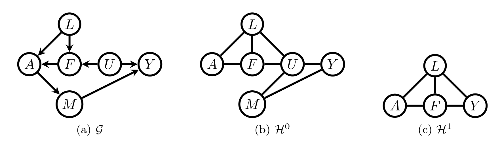
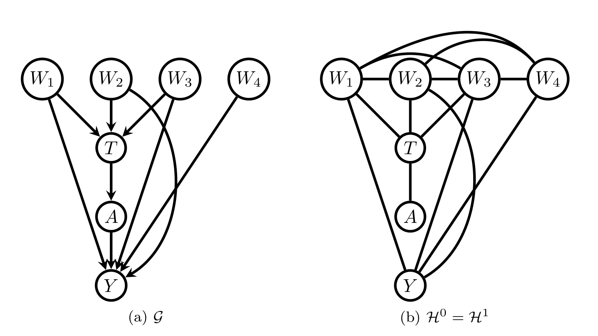
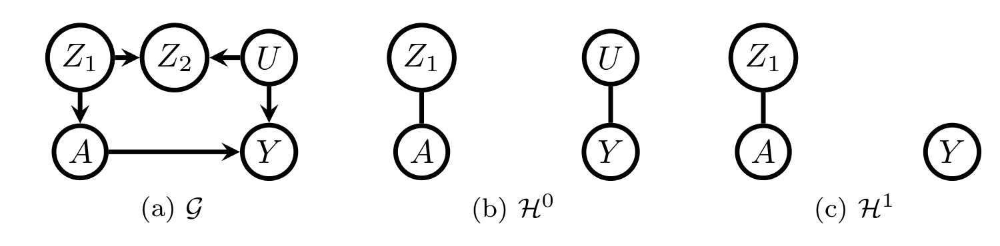
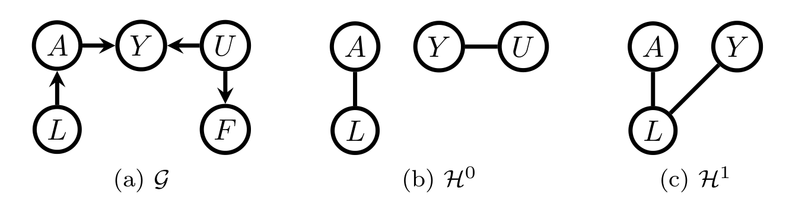
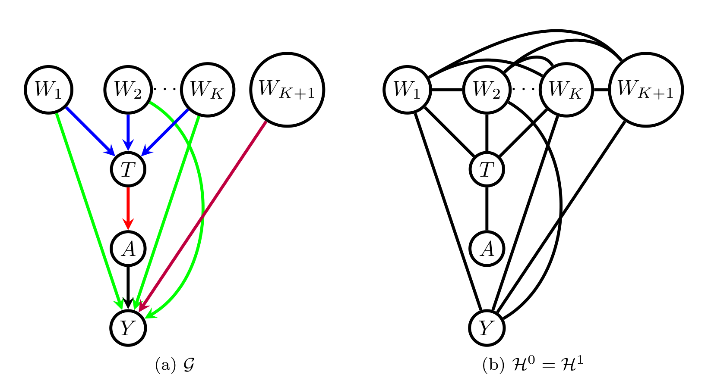

본 포스트는 Ezequiel Smucler, Facundo Sapienza, Andrea Rotnitzky의 논문 Efficient adjustment sets in causal graphical models with hidden variables (arXiv:2004.10521v3 [math.ST], 2020년 5월)을 바탕으로, 인과 그래프와 준모수 추정 이론에 익숙하지 않은 독자도 논리적 흐름을 따라갈 수 있도록 재구성한 것입니다. 이 논문은 같은 저자들의 선행 연구인 Rotnitzky & Smucler (2019) Efficient adjustment sets for population average treatment effect estimation in non-parametric causal graphical models (arXiv:1912.00306)을 동적 처치 요법(dynamic treatment regime)과 잠재변수(hidden variables) 상황으로 확장한 후속편에 해당합니다.
논문 정보 (Paper Information)
- 제목: Efficient adjustment sets in causal graphical models with hidden variables
- 저자: Ezequiel Smucler, Facundo Sapienza, Andrea Rotnitzky
- 소속:
- Ezequiel Smucler — Department of Mathematics and Statistics, Universidad Torcuato Di Tella
- Facundo Sapienza — Department of Statistics, University of California, Berkeley
- Andrea Rotnitzky — Department of Economics, Universidad Torcuato Di Tella, CONICET / Department of Biostatistics, Harvard T.H. Chan School of Public Health
- 출처: arXiv:2004.10521v3 [math.ST], 2020년 5월 26일 (본문 표기 날짜 2020년 5월 27일)
- 키워드: 조정집합(adjustment set), 동적 처치 요법(dynamic treatment regime), 오프폴리시 평가(off-policy evaluation), 잠재변수(hidden variables), 점근분산(asymptotic variance), 정점 절단(vertex cut), 격자(lattice), 다항시간 알고리즘(polynomial time algorithm)
한 줄 요약 (TL;DR)
“조정집합 선택 문제는, 적절히 구성한 무향 그래프에서 \(A\)와 \(Y\)를 가르는 정점 절단(vertex cut)을 고르는 문제와 정확히 같다.”
논문은 원래의 DAG \(\mathcal{G}\)로부터 비모수 조정 효율 그래프(non-parametric adjustment efficiency graph) \(\mathcal{H}^1\)을 구성하여, “유효한 조정집합”이 \(\mathcal{H}^1\)의 “\(A-Y\) 절단”과 일대일로 대응하도록 만듭니다. 이 대응 위에서 절단들 사이의 부분순서 \(\trianglelefteq_{\mathcal{H}^1}\)가 점근분산의 순서와 정확히 일치함을 보이고, Halin(1993)의 격자 정리를 빌려 최소(minimal) 절단들과 최소 크기(minimum) 절단들이 각각 격자를 이룬다는 사실로부터 최적 minimal 조정집합 \(\mathbf{O}_{\min}\)과 최적 minimum 조정집합 \(\mathbf{O}_{m}\)이 항상 존재함을 증명합니다. 나아가 관측 변수가 모두 \(\{A, Y\} \cup \mathbf{L}\)의 조상이거나 잠재변수가 아예 없으면 전역 최적 조정집합 \(\mathbf{O}\)가 존재하며, 세 집합 모두 다항시간에 계산됩니다. 잠재변수 · 동적 정책이라는 두 겹의 일반화를 얹으면서도, 조합적 그래프 이론 하나로 문제를 통째로 갈아 끼운 것이 이 논문의 핵심입니다.
초록 (Abstract)
논문이 다루는 문제와 기여를 초록 수준에서 먼저 정리해 보겠습니다.
- 문제 설정: 점 노출 동적 정책(point exposure dynamic policy) — 통계학 문헌에서는 동적 처치 요법(dynamic treatment regime)이라 부르는 — 의 값을 추정하기 위한 공변량 조정집합(covariate adjustment set)의 선택 문제를 다룹니다. 모형은 잠재변수를 포함하는 비모수 인과 그래프 모형이며, 적어도 하나의 조정집합은 완전히 관측 가능하다고 가정합니다.
- 기여 1 (비교 기준의 확장): 잠재변수가 없는 그래프에서 정적(static) 정책값 추정량들의 점근분산을 비교하기 위해 최근 개발된 기준들이, 동적 정책과 잠재변수가 있는 그래프에서도 그대로 유효함을 보입니다.
- 기여 2 (존재성): 최적 minimal(minimum) 조정집합 — minimal(최소 크기)인 조정집합들 중에서 가장 작은 분산을 주는 것 — 이 항상 존재함을 보입니다. 또한 잠재변수가 없거나, 모든 관측 변수가 처치 · 결과 · 처치 결정에 쓰이는 변수의 조상이면 전역 최적(globally optimal) 조정집합이 존재함을 보입니다.
- 기여 3 (알고리즘): 전역 최적(존재할 때), 최적 minimal, 최적 minimum 조정집합을 계산하는 다항시간 알고리즘을 제공합니다.
- 핵심 도구: 결과들의 토대는 무향 그래프의 구성입니다. 이 그래프에서 처치와 결과 사이의 정점 절단(vertex cut)이 조정집합에 대응하고, minimal 절단들 사이의 부분순서가 격자(lattice)를 이루며, 이 부분순서가 대응하는 비모수 조정 추정량들의 점근분산 순서와 직접적으로 일치합니다.
1. 서론 (Introduction)
1.1 문제의 출발점: 오프폴리시 평가와 공변량 선택
논문이 다루는 것은 단일 시점 맥락적 의사결정(single time contextual decision making) 문제에서의 오프폴리시 평가(off-policy evaluation)(Precup et al., 2000)를 위한 공변량 선택입니다.
- 상황: 우리가 값을 알고 싶은 정책은 \(\pi\)인데, 손에 있는 데이터는 다른 정책 하에서 수집된 것입니다.
- 방법: 공변량 조정(covariate adjustment)으로 그 정책의 값을 식별하고 추정합니다.
- 모형: 잠재변수를 포함할 수 있는 인과 그래프 모형이되, 적어도 하나의 유효 조정집합은 완전히 관측 가능하다고 가정합니다.
- 정책값(value of a policy): 개입 평균(interventional mean), 즉 그 정책 하에서 결과(보상)의 평균으로 정의됩니다. 통계학 문헌에서는 정책을 동적 처치 요법이라 부릅니다(Robins, 1993; Murphy et al., 2001; Robins, 2004; Schulte et al., 2014).
논문이 스스로 밝히는 응용은 계획된 관찰연구(planned observational study)의 설계입니다. 연구자는 다음 두 단계를 밟습니다.
- 기존의 그래프 기준(Pearl, 2000; Kuroki & Miyakawa, 2003; Shpitser et al., 2010)으로 유효한 조정집합 후보군을 식별합니다.
- 이 논문의 방법으로 그중 최적성 기준을 만족하는 조정집합 하나를 고릅니다.
즉 “어떤 변수를 실제로 측정할 것인가”를 데이터 수집 전에 결정하는 문제입니다. 비용 · 윤리 · 실현 가능성 때문에 모든 변수를 잴 수 없는 상황에서, 잴 수 있는 변수 중 가장 효율적인 조합을 고르는 것이 목표입니다.
1.2 세 가지 최적성 기준
각 기준은 관측 가능한 조정집합들 중에서, 비모수 조정 추정량의 점근분산이 가장 작은 것을 고르는 방식으로 정의됩니다. 차이는 어떤 후보군(class) 안에서 고르느냐입니다.
| 기준 | 후보군 | 이름 | 기호 |
|---|---|---|---|
| (i) | 모든 조정집합 | 전역 최적(globally optimal) | \(\mathbf{O}\) |
| (ii) | 모든 minimal 조정집합 | 최적 minimal(optimal minimal) | \(\mathbf{O}_{\min}\) |
| (iii) | 최소 크기(minimum cardinality) 조정집합 전부 | 최적 minimum(optimal minimum) | \(\mathbf{O}_{m}\) |
여기서 minimal 조정집합이란 거기서 변수를 하나라도 빼면 유효한 조정집합이 아니게 되는 집합입니다.
- minimal(극소): 더 이상 줄일 수 없다 — 포함관계에 대한 극소성입니다.
- minimum(최소): 원소 개수가 가장 적다 — 기수(cardinality)에 대한 최소성입니다.
모든 minimum 절단은 minimal이지만, 역은 일반적으로 거짓입니다. 뒤에서 볼 Example 2가 정확히 이 간극을 보여 줍니다. 거기서 \(\mathbf{O}_{\min}\)의 크기는 \(K\)인데 \(\mathbf{O}_{m}\)의 크기는 1입니다. 그리고 크기가 작다고 분산이 작은 것은 결코 아닙니다 — 이 점이 이 논문의 가장 중요한 실용적 교훈 중 하나입니다.
1.3 기존 연구의 계보와 이 논문이 넓히는 지점
조정집합의 효율성 비교라는 문제는 다음의 계보를 따라 발전해 왔습니다.
- Kuroki & Miyakawa (2003): 두 조정집합을 통제한 정책값 추정량의 점근분산을 비교하는 그래프 기준을 제안했습니다. 다만 가정이 매우 강합니다 — (i) 선형 인과 그래프 모형, 잠재변수 없음, (ii) 정책이 단일 공변량 \(L\)의 아핀 함수, (iii) 최소제곱(OLS) 추정량, (iv) 조정집합이 \(L\)과 또 하나의 단일 변수로만 구성.
- Henckel et al. (2019): (i)과 (iii)은 유지하되 정적(static) 정책으로 한정하여, 전역 최적 조정집합의 일반적인 그래프적 특성화를 유도했습니다. 또한 이전 기준들(Kuroki & Cai, 2004; Kuroki & Miyakawa, 2003)보다 더 널리 적용되는 비교 기준을 제시했고, 반례를 통해 잠재변수가 있는 그래프에서는 관측 가능한 조정집합들 사이에 전역 최적이 존재하지 않을 수 있음을 보였습니다.
- Witte et al. (2020): 같은 집합에 대한 대안적 그래프 특성화를 유도했습니다.
- Rotnitzky & Smucler (2019): Henckel et al. (2019)의 결과를 비모수 인과 그래프 모형과 비모수 조정 추정량으로 확장했습니다. 나아가 최적 minimal 조정집합의 그래프적 특성화를 제공했습니다.
- 비교 기준의 확장 — Henckel et al. (2019)의 조정집합 쌍 비교 기준이 잠재변수를 포함한 비모수 인과 그래프 모형에서 점 노출 동적 처치 요법에 대해서도 유효함을 보입니다.
- 전역 최적의 존재 조건 — 잠재변수가 없거나, 혹은 모든 관측 변수가 처치 · 결과 · 처치 결정에 쓰이는 변수들의 조상이면 전역 최적 조정집합이 존재하며, 그 그래프적 특성화를 제공합니다.
- 최적 minimal · minimum의 존재 — 잠재변수가 있는 그래프라도 관측 가능한 조정집합이 하나라도 있으면 최적 minimal 조정집합과 최적 minimum 조정집합이 항상 존재하며, 각각의 그래프적 특성화를 제공합니다.
- 다항시간 알고리즘 — 위 세 집합을 계산하는 다항시간 알고리즘을 제공합니다.
계산 알고리즘의 계보도 짚어 두겠습니다. 이 논문의 알고리즘은 조정집합의 그래프적 특성화와 계산에 관한 선행 연구 위에 세워집니다.
- Acid & De Campos (1996), Tian et al. (1998): DAG에서 주어진 정점쌍에 대한 minimal d-분리자와 minimum 크기 d-분리자를 찾는 다항시간 알고리즘을 제안했습니다.
- van der Zander et al. (2019) (그 전신인 Textor & Liskiewicz, 2011; van der Zander et al., 2014 포함): 정적 개입에 대한 조정집합의 구성적 그래프 특성화와, 조정집합 · minimal 조정집합 · minimum 크기 조정집합을 계산하는 다항시간 알고리즘을 제공했습니다. 심지어 “어떤 변수는 반드시 포함”, “어떤 변수는 반드시 배제”라는 제약 조건 하에서도 작동합니다.
1.4 논문의 구성
| 절 | 내용 |
|---|---|
| §2 | 인과 그래프 모형의 기본 정의와 결과 |
| §3 | Shpitser et al. (2010) · Maathuis & Colombo (2015)의 조정집합 정의를 동적 처치 요법으로 확장 |
| §4 | 정책값의 비모수 추정 이론 정리 |
| §5 | Rotnitzky & Smucler (2019)의 비교 기준을 잠재변수 그래프의 동적 개입으로 확장 |
| §6 | 전역 최적(존재 시) · 최적 minimal · 최적 minimum의 그래프적 특성화 |
| §7 | 이들을 계산하는 다항시간 알고리즘 |
| §8 | 열린 문제에 대한 논의 |
| §9 | 보충 자료 (모든 결과의 증명) |
2. 배경 (Background)
2.1 정의와 표기 (Definitions and notation)
본 포스트에서는 원문의 표기를 따르되, 혼동을 피하기 위해 다음을 명시합니다.
- 그래프: \(\mathcal{G}\)(유향), \(\mathcal{H}\)(무향)
- 정점 집합: 볼드 대문자 \(\mathbf{V}, \mathbf{Z}, \mathbf{G}, \mathbf{B}, \mathbf{L}, \mathbf{N}\)
- 개별 정점(변수): \(A\)(처치), \(Y\)(결과), \(V, W, U\) 등
특히 원문에서 \(\mathcal{G}\)(그래프)와 \(\mathbf{G}\)(정점 집합)가 같은 문자를 쓰므로 Lemma 1–2를 읽을 때 주의가 필요합니다. 본 포스트는 그래프는 항상 필기체 \(\mathcal{G}\)로, 정점 집합은 항상 볼드 \(\mathbf{G}\)로 씁니다.
2.1.1 무향 그래프 (Undirected graphs)
이 논문의 주무대이므로 꼼꼼히 짚고 가겠습니다.
- 무향 그래프 \(\mathcal{H} = (\mathbf{V}, \mathbf{E})\): 유한한 정점 집합 \(\mathbf{V}\)와 무향 엣지 집합 \(\mathbf{E}\)로 구성됩니다. 두 정점 \(V, W\) 사이의 무향 엣지는 \(V - W\)로 표기합니다.
- 유도 부분그래프(induced subgraph) \(\mathcal{H}_{\mathbf{Z}} = (\mathbf{Z}, \mathbf{E}_{\mathbf{Z}})\): \(\mathbf{Z} \subset \mathbf{V}\)의 정점들과 그들 사이의 엣지만 남긴 그래프입니다.
- 경로(path): 정점열 \((V_1, \dots, V_j)\)로서 \(V_1 = V\), \(V_j = W\)이고 모든 \(i\)에 대해 \(V_i\)와 \(V_{i+1}\)이 인접한 것입니다.
- 이웃(neighbors): \(V\)에 인접한 정점들의 집합을 \(\mathrm{nb}_{\mathcal{H}}(V)\)로 표기하며, 집합 \(\mathbf{Z}\)에 대해서는 \(\mathrm{nb}_{\mathcal{H}}(\mathbf{Z}) \equiv \bigcup_{Z \in \mathbf{Z}} \mathrm{nb}_{\mathcal{H}}(Z)\)입니다.
- 연결 성분(connected component): \(\mathbf{U}\) 안의 정점들만 지나는 경로로 서로 연결되는 극대 부분집합입니다.
- 경계(boundary) \(\partial_{\mathcal{H}} \mathbf{U}\): \(\mathbf{V} \setminus \mathbf{U}\)에 속하면서 \(\mathbf{U}\)의 정점 중 적어도 하나와 인접한 정점들의 집합입니다.
- \(\mathrm{cc}(\mathbf{U}, Y, \mathcal{H})\): \(Y \in \mathbf{V} \setminus \mathbf{U}\)일 때, \(\mathbf{U}\)를 제거한 그래프 \(\mathcal{H}_{\mathbf{V} \setminus \mathbf{U}}\)에서 \(Y\)를 포함하는 연결 성분입니다.
무향 그래프 \(\mathcal{H} = (\mathbf{V}, \mathbf{E})\)에서 \(A, Y \in \mathbf{V}\)이고 \(\mathbf{Z} \subset \mathbf{V}\)가 \(\mathbf{Z} \cap \{A, Y\} = \emptyset\)을 만족한다고 하자.
- \(\mathbf{Z}\)가 \(A-Y\) 절단(\(A-Y\) cut)이라 함은 \(A\)와 \(Y\) 사이의 모든 경로가 \(\mathbf{Z}\)의 정점을 지나는 것을 말한다. 이때 \(A \perp_{\mathcal{H}} Y \mid \mathbf{Z}\)로 표기한다.
- minimal \(A-Y\) 절단: \(A-Y\) 절단이면서 그 어떤 진부분집합도 \(A-Y\) 절단이 아닌 것.
- minimum \(A-Y\) 절단: \(A-Y\) 절단이면서 그보다 기수가 작은 \(A-Y\) 절단이 존재하지 않는 것.
모든 minimum 절단은 minimal이지만, 역은 일반적으로 성립하지 않는다.
격자 \(\mathcal{L} = (L, \trianglelefteq)\)란 집합 \(L\)과 그 위의 반사적 · 반대칭적 · 추이적 관계 \(\trianglelefteq\)의 쌍으로서, 모든 \(a, b \in L\)에 대해
- \(L\) 안에 \(a, b\)의 최대 하계(greatest lower bound) — \(a, b\)의 inf — 가 존재하고,
- \(L\) 안에 \(a, b\)의 최소 상계(smallest upper bound) — \(a, b\)의 sup — 가 존재
하는 구조를 말한다.
이 논문의 논증 구조를 한마디로 요약하면 “두 후보가 있으면 항상 둘보다 나은 제3의 후보를 만들 수 있다”입니다. 격자 구조의 inf(최대 하계)가 바로 그 “둘보다 나은 제3의 후보”를 제공합니다.
유한한 후보군에서 임의의 두 원소에 대해 항상 inf가 존재한다면, 전체의 inf를 취해 유일한 최적 원소를 얻을 수 있습니다. 존재성 증명이 이렇게 조합론적으로 끝나 버리는 것이 이 논문의 가장 우아한 지점입니다.
2.1.2 유향 그래프 (Directed graphs)
- 유향 그래프 \(\mathcal{G} = (\mathbf{V}, \mathbf{E})\): \(\mathbf{E} \subset \mathbf{V} \times \mathbf{V}\)이며 \(V \to W\)로 표기합니다.
- 유향 경로(directed path) / 인과 경로(causal path): 경로 \((V_1, \dots, V_j)\)에서 모든 \(i\)에 대해 \(V_i \to V_{i+1}\)인 것입니다.
- 조상 관계: \(V \to W\)이면 \(V\)는 \(W\)의 부모(parent), \(W\)는 \(V\)의 자식(child)입니다. \(V\)에서 \(W\)로 유향 경로가 있으면 \(V\)는 \(W\)의 조상(ancestor), \(W\)는 \(V\)의 후손(descendant)입니다. 모든 정점은 자기 자신의 조상이자 후손이라는 관례를 따릅니다.
- 표기: \(\mathrm{pa}_{\mathcal{G}}(V)\), \(\mathrm{ch}_{\mathcal{G}}(V)\), \(\mathrm{an}_{\mathcal{G}}(V)\), \(\mathrm{de}_{\mathcal{G}}(V)\). 비후손(non-descendants)은 \(\mathrm{nd}_{\mathcal{G}}(V) \equiv \mathbf{V} \setminus \mathrm{de}_{\mathcal{G}}(V)\)이고, 집합에 대해서는 \(\mathrm{an}_{\mathcal{G}}(\mathbf{Z}) = \bigcup_{Z \in \mathbf{Z}} \mathrm{an}_{\mathcal{G}}(Z)\)입니다.
- 충돌자(collider)와 분기점(fork): 경로 \(\delta\)가 부분경로 \((U, V, W)\)를 포함할 때, \(U \to V \leftarrow W\)이면 \(V\)는 그 경로 위의 충돌자, \(U \leftarrow V \to W\)이면 분기점입니다.
- DAG: 유향 순환이 없는 유향 그래프입니다.
\(\mathcal{G}\)를 정점 집합 \(\mathbf{V}\)의 DAG라 하고, \(\mathbf{U}, \mathbf{W}, \mathbf{Z}\)를 \(\mathbf{V}\)의 서로 다른 부분집합이라 하자. \(U \in \mathbf{U}\)와 \(W \in \mathbf{W}\) 사이의 경로 \(\delta\)가 \(\mathbf{Z}\)에 의해 차단(blocked)된다 함은 다음 중 하나가 성립하는 것이다.
- \(\delta\) 위에 충돌자가 아니면서 \(\mathbf{Z}\)의 원소인 정점이 존재한다, 또는
- \(\delta\) 위에 충돌자 \(C\)가 존재하여 \(C\)도 그 후손들도 \(\mathbf{Z}\)의 원소가 아니다.
임의의 \(U \in \mathbf{U}\), \(W \in \mathbf{W}\)에 대해 모든 경로가 \(\mathbf{Z}\)에 의해 차단되면 \(\mathbf{U}\)와 \(\mathbf{W}\)는 \(\mathbf{Z}\)에 의해 d-분리되며, \(\mathbf{U} \perp\!\!\!\perp_{\mathcal{G}} \mathbf{W} \mid \mathbf{Z}\)로 표기한다.
도덕 그래프(moral graph) \(\mathcal{G}^m\)은 이 논문에서 d-분리를 무향 그래프의 분리로 번역하는 다리 역할을 합니다.
- 정의: \(\mathcal{G}\)와 같은 정점 집합을 갖고, \(\mathcal{G}\)에서 \(U \to V\), \(V \to U\), 또는 \(U \to W \leftarrow V\)인 정점 \(W\)가 존재할 때 \(U - V\) 엣지를 갖는 무향 그래프입니다. 즉 엣지의 방향을 지우고, 공통 자식을 갖는 부모들을 결혼(marry)시킨 것입니다.
- Lauritzen (1996)의 Proposition 3.25가 다음을 보장합니다.
\[ \mathbf{U} \perp\!\!\!\perp_{\mathcal{G}} \mathbf{W} \mid \mathbf{Z} \iff \mathbf{U} \perp_{\{\mathcal{G}_{\mathrm{an}_{\mathcal{G}}(\mathbf{U} \cup \mathbf{W} \cup \mathbf{Z})}\}^m} \mathbf{W} \mid \mathbf{Z} \tag{1} \]
식 (1)은 “관련된 정점들의 조상 집합으로 유도 부분그래프를 만든 뒤 도덕화하면, DAG의 d-분리가 무향 그래프의 단순한 경로 차단으로 바뀐다”는 뜻입니다.
- 왼쪽: DAG에서의 d-분리 — 충돌자 규칙 때문에 조건화 집합이 커지면 오히려 경로가 열릴 수 있어 단조롭지 않습니다.
- 오른쪽: 무향 그래프에서의 정점 절단 — 조건화 집합이 커지면 경로는 더 막히기만 합니다. 단조롭습니다.
이 단조성 덕분에 최대 유량(max-flow) / 최소 절단(min-cut) 알고리즘과 격자 이론을 그대로 끌어다 쓸 수 있습니다. §6과 §7이 전부 이 다리 위에 서 있습니다.
2.2 인과 그래프 모형 (Causal graphical models)
2.2.1 베이지안 네트워크와 국소 마르코프 성질
DAG \(\mathcal{G}\)로 표현되는 베이지안 네트워크 \(\mathcal{M}(\mathcal{G})\)는 정점 집합 \(\mathbf{V}\)를 확률벡터와 동일시하고, \(\mathbf{V}\)의 법칙 \(P\)가 국소 마르코프 성질(Local Markov Property)을 만족한다고 가정하는 통계 모형입니다.
\[ V \perp\!\!\!\perp \mathrm{nd}_{\mathcal{G}}(V) \mid \mathrm{pa}_{\mathcal{G}}(V) \quad \text{under } P, \quad \forall V \in \mathbf{V} \]
\(P\)가 어떤 지배측도에 대해 밀도 \(f\)를 가진다고 가정하면, 국소 마르코프 성질은 인수분해(factorization)를 함의합니다.
\[ f(\mathbf{v}) = \prod_{V_j \in \mathbf{V}} f\{v_j \mid \mathrm{pa}_{\mathcal{G}}(v_j)\} \tag{2} \]
2.2.2 인과 불가지론 모형과 g-공식
논문 전체에서 가정하는 것은 DAG \(\mathcal{G}\)로 표현되는 인과 불가지론 그래프 모형(causal agnostic graphical model)(Spirtes et al., 2000; Robins & Richardson, 2010)입니다. 이 모형은 \(\mathcal{G}\)의 정점 집합을 사실적(factual) 확률벡터 \(\mathbf{V} \equiv (V_1, \dots, V_s)\)와 동일시하고 다음을 가정합니다.
- (i) \(\mathbf{V}\)의 법칙 \(P\)가 모형 \(\mathcal{M}(\mathcal{G})\)를 따른다.
- (ii) 임의의 \(A \in \mathbf{V}\), \(\mathbf{L} \subset \mathrm{nd}_{\mathcal{G}}(A)\), 그리고 \(\mathbf{L}\)이 주어졌을 때 \(A\)의 조건부 법칙 \(\pi(A \mid \mathbf{L})\)에 대해, (\(\;\)사실과 다를 수 있게\(\;\)) \(A\)의 값이 \(\pi(A \mid \mathbf{L})\)에서 뽑힐 때의 개입 밀도(intervention density) \(f_{\pi}(\mathbf{v})\)가 다음으로 주어진다.
\[ f_{\pi}(\mathbf{v}) = \pi(a \mid \mathbf{l}) \prod_{V_j \in \mathbf{V} \setminus \{A\}} f\{v_j \mid \mathrm{pa}_{\mathcal{G}}(v_j)\} \tag{3} \]
식 (3)은 문헌마다 다른 이름으로 불립니다.
- g-공식(g-formula) (Robins, 1986)
- 조작 밀도 공식(manipulated density formula) (Scheines et al., 1998)
- 절단 인수분해 공식(truncated factorization formula) (Pearl, 2000)
식 (2)와 (3)을 나란히 놓으면 차이가 한눈에 보입니다. \(A\)의 자연적 인수 \(f\{a \mid \mathrm{pa}_{\mathcal{G}}(a)\}\)를 정책 \(\pi(a \mid \mathbf{l})\)로 갈아 끼운 것이 전부입니다.
정책(policy) \(\pi\)의 해석을 정리하면 다음과 같습니다.
- 조건부 법칙 \(\pi\)가 (확률적일 수도 있는) 정책 또는 동적 처치 요법을 지정합니다.
- \(A\)에 값 \(d(\mathbf{L})\)을 할당하는 비확률적 요법은 점질량 조건부 법칙 \(\pi(a \mid \mathbf{l}) = \mathbb{I}_{d(\mathbf{l})}(a)\)에 대응합니다.
- 특히 상수 함수 \(d(\mathbf{L}) = a\)는 \(A\)를 \(a\)로 고정하는 비확률적 정적 요법(static regime)입니다.
2.2.3 정책값(policy value)의 정의와 표현
\(Y \in \mathrm{de}_{\mathcal{G}}(A)\)를 관심 결과(보상)로 두면, 정책 \(\pi\)의 값(value) \(\chi_{\pi}(P; \mathcal{G})\)는 개입 법칙 \(f_{\pi}\) 하에서 결과의 평균으로 정의됩니다. 인수분해 (2), (3)과 라돈–니코딤 정리로부터
\[ \chi_{\pi}(P; \mathcal{G}) = E_P \left\{ \frac{\pi(A \mid \mathbf{L})}{f\{A \mid \mathrm{pa}_{\mathcal{G}}(A)\}} \, Y \right\} \]
나아가 국소 마르코프 성질은 다음 표현을 함의합니다.
\[ \begin{aligned} \chi_{\pi}(P; \mathcal{G}) &= \int y \, \pi(a \mid \mathbf{l}) \, f(y \mid a, \mathbf{l}, \mathbf{pa}) \, f(\mathbf{l}, \mathbf{pa}) \, d(y, a, \mathbf{pa}, \mathbf{l} \setminus \mathbf{pa}) \\[4pt] &= E_P \Big( E_{\pi^*} \big[ E_P \{ Y \mid A, \mathrm{pa}_{\mathcal{G}}(A), \mathbf{L} \} \,\big|\, \mathrm{pa}_{\mathcal{G}}(A), \mathbf{L} \big] \Big) \end{aligned} \]
여기서 \(E_P(\cdot \mid \cdot)\)는 \(P\) 하의 조건부 평균이고, \(E_{\pi^*}(\cdot \mid \cdot)\)는 \(\pi^*\{A \mid \mathrm{pa}_{\mathcal{G}}(A), \mathbf{L}\} \equiv \pi(A \mid \mathbf{L})\)로 정의되는 조건부 법칙 하의 조건부 평균입니다.
- 첫 번째(가중치 형태): \(\pi/f\)라는 밀도비 가중치로 표현되어, IPW 추정량의 모집단 버전이 무엇인지 곧바로 알려 줍니다.
- 두 번째(반복 기댓값 형태): 안쪽 회귀 \(\to\) 정책에 대한 평균 \(\to\) 바깥 평균의 3단 구조로, 결과 회귀(outcome regression) 추정량의 청사진입니다.
\(\S 4\)에서 볼 영향함수 (5)는 이 두 표현을 결합한 이중 강건(doubly robust) 형태를 띱니다.
2.2.4 추론 문제의 설정과 포함 가정 (inclusion assumptions)
이 논문이 다루는 추론 문제는 \(\mathbf{V}\) 중 부분집합 \(\mathbf{N}\)만 관측 가능할 때 \(\chi_{\pi}(P; \mathcal{G})\)를 추론하는 것입니다. 세 가지 가정으로 정리됩니다.
- (i) 법칙 \(P\)가 베이지안 네트워크 \(\mathcal{M}(\mathcal{G})\)를 따른다.
- (ii) \(P\) 하에서 \(\mathbf{N}\)의 주변 법칙으로부터의 확률 표본에서 부분벡터 \(\mathbf{N}\)만 관측된다.
- (iii) 관심 모수는 범함수 \(\chi_{\pi}(P; \mathcal{G})\)이다.
논문 전체에서 \(\mathcal{G}\)는 정점 집합 \(\mathbf{V}\)의 DAG이고 \((A, Y, \mathbf{L}, \mathbf{N})\)은 다음을 만족한다고 가정한다.
- (i) \(A \in \mathrm{an}_{\mathcal{G}}(Y)\) — 처치는 결과의 조상이다.
- (ii) \(\{A, Y\} \cup \mathbf{L} \subset \mathbf{N}\) — 처치 · 결과 · 정책이 참조하는 공변량은 모두 관측 가능하다.
- (iii) \(\mathbf{L} \subset \mathrm{nd}_{\mathcal{G}}(A)\) — 정책이 참조하는 공변량은 처치의 비후손이다.
또한 측도론적 복잡성을 피하기 위해 \(A\)는 유한집합 \(\mathcal{A}\)에 값을 갖는다고 가정한다.
논문은 이 문제를 인과 불가지론 모형으로 동기부여했지만, \(\mathbf{V}\)의 법칙 \(P\)가 오직 국소 마르코프 성질로만 제약되고, 개입 \(\pi\) 하의 값이 범함수 \(\chi_{\pi}(P; \mathcal{G})\)와 일치하는 다른 인과 그래프 모형에서도 동일하게 성립합니다. 예를 들어 독립 오차를 갖는 비모수 구조방정식 모형(Pearl, 2000)이나 FFRCISTG 모형(finest fully randomized causally interpreted structured tree graph; Robins, 1986)이 그렇습니다.
3. 조정집합 (Adjustment Sets)
이 절의 목표는 정적 개입에 대해 정의되어 있던 조정집합 개념을 동적 정책으로 확장하고, 놀랍게도 두 개념이 일치함을 보이는 것입니다.
3.1 정적 조정집합 (Static adjustment set)
집합 \(\mathbf{Z} \subset \mathbf{V} \setminus \{A, Y\}\)가 \(\mathcal{G}\)에서 \(A, Y\)에 대한 정적 조정집합(static adjustment set)이라 함은, 모든 고정된 \(a\)와 모든 \(P \in \mathcal{M}(\mathcal{G})\)에 대해
\[ E_P \big[ E_P \{ \mathbb{I}_{(-\infty, y]}(Y) \mid A = a, \mathrm{pa}_{\mathcal{G}}(A) \} \big] = E_P \big[ E_P \{ \mathbb{I}_{(-\infty, y]}(Y) \mid A = a, \mathbf{Z} \} \big] \]
가 모든 \(y \in \mathbb{R}\)에 대해 성립하는 것이다.
정의를 읽는 법을 짚어 보겠습니다.
- 왼쪽 항은 \(\mathrm{pa}_{\mathcal{G}}(A)\)로 조정한 것입니다. 부모 집합은 항상 유효한 조정집합이므로, 이는 참값 \(\chi_{\pi_a}(P;\mathcal{G})\)의 분포함수 버전입니다.
- 오른쪽 항은 \(\mathbf{Z}\)로 조정한 것입니다.
- 즉 정의는 “\(\mathbf{Z}\)로 조정해도 참값과 같은 답을 준다”를 (모든 \(y\)에 대한 분포함수 수준에서) 요구합니다.
따라서 정적 조정집합 \(\mathbf{Z}\)에 대해, \(A\)를 \(a\)로 설정하는 비확률적 정적 요법 \(\pi_a(A) \equiv \mathbb{I}_a(A)\)의 값 함수 \(\chi_{\pi_a}(P; \mathcal{G})\)는 반복 조건부 기댓값 \(E_P\{E_P(Y \mid A = a, \mathbf{Z})\}\)로 표현됩니다.
계보 정리:
- 뒷문 기준(back-door criterion)(Pearl, 2000): \(\mathbf{Z}\)가 정적 조정집합이기 위한 충분조건이지만 필요조건은 아닙니다.
- Shpitser et al. (2010): 필요충분 그래프 조건을 제시했습니다.
- van der Zander et al. (2019): 대안적이고 구성적(constructive)인 그래프 특성화를 제시했습니다. 이 논문은 이 특성화를 직접 사용합니다.
3.2 동적 조정집합 (Dynamic adjustment set)
이제 정의를 (확률적일 수도 있는) \(\mathbf{L}\)-의존 정책으로 확장합니다.
\(\mathbf{L} \subset \mathrm{nd}_{\mathcal{G}}(A)\)라 하자. 집합 \(\mathbf{Z} \subset \mathbf{V} \setminus \{A, Y\}\)가 \(\mathcal{G}\)에서 \(A, Y\)에 대한 \(\mathbf{L}\) 동적 조정집합(\(\mathbf{L}\) dynamic adjustment set)이라 함은, \(\mathbf{L} \subset \mathbf{Z}\)이고 \(\mathbf{L}\)이 주어졌을 때 \(A\)의 모든 조건부 법칙 \(\pi(A \mid \mathbf{L})\), 모든 \(P \in \mathcal{M}(\mathcal{G})\), 모든 \(y \in \mathbb{R}\)에 대해 다음이 성립하는 것이다.
\[ E_P \Big( E_{\pi^*} \big[ E_P \{ \mathbb{I}_{(-\infty,y]}(Y) \mid A, \mathrm{pa}_{\mathcal{G}}(A), \mathbf{L} \} \,\big|\, \mathrm{pa}_{\mathcal{G}}(A), \mathbf{L} \big] \Big) = E_P \Big( E_{\pi^*_{\mathbf{Z}}} \big[ E_P \{ \mathbb{I}_{(-\infty,y]}(Y) \mid A, \mathbf{Z} \} \,\big|\, \mathbf{Z} \big] \Big) \tag{4} \]
여기서 \(\pi^*_{\mathbf{Z}}(A \mid \mathbf{Z}) \equiv \pi(A \mid \mathbf{L})\)이고, 앞서와 같이 \(\pi^*\{A \mid \mathrm{pa}_{\mathcal{G}}(A), \mathbf{L}\} \equiv \pi(A \mid \mathbf{L})\)이다.
동적 조정집합의 정의는 \(\mathbf{L} \subset \mathbf{Z}\)를 요구합니다. 당연해 보이지만 이유가 있습니다. 오른쪽 항의 \(E_{\pi^*_{\mathbf{Z}}}(\cdot \mid \mathbf{Z})\)가 잘 정의되려면 \(\mathbf{Z}\)를 알 때 정책 \(\pi(A \mid \mathbf{L})\)을 계산할 수 있어야 하고, 그러려면 \(\mathbf{L}\)이 \(\mathbf{Z}\)에 들어 있어야 합니다.
실무적 함의: 정책이 참조하는 변수는 반드시 조정집합에 포함되어야 합니다. 즉 “정책이 무엇을 보고 결정하는가”가 “무엇을 측정해야 하는가”의 하한을 결정합니다.
3.3 설계 관점에서의 동기
논문이 그리는 구체적 시나리오는 이렇습니다.
- 연구자가 여러 \(\mathbf{L}\)-의존 정책을 평가하는 연구를 계획하는 단계에 있고, 인과 그래프 모형을 이미 세워 두었습니다.
- 실무적 · 윤리적 · 비용상의 이유로 \(\mathcal{G}\)의 변수 중 부분집합 \(\mathbf{N}\)만 관측 가능하다는 것을 인정합니다.
- 그런데 \(\mathbf{N}\)이 적어도 하나의 \(\mathbf{L}\) 동적 조정집합 \(\mathbf{Z}\)를 포함한다고 합시다.
- 그러면 연구자는 \(A\), \(Y\) 외에 \(\mathbf{Z}\)만 측정하기로 결정할 수 있습니다. 이 변수들만으로 정책값 \(\chi_{\pi}(P; \mathcal{G})\)가 다음 범함수로 식별되기 때문입니다.
\[ \chi_{\pi, \mathbf{Z}}(P; \mathcal{G}) \equiv E_P \big[ E_{\pi^*_{\mathbf{Z}}} \{ E_P(Y \mid A, \mathbf{Z}) \mid \mathbf{Z} \} \big] \]
여기에 이 논문의 철학적 선택이 담겨 있습니다. 이 전략은 인과 그래프 모형을 오직 설계 단계에서 조정집합을 식별하는 보조 도구로만 사용합니다. 모형 오지정(model misspecification)에 대한 강건성을 위해, 다음 두 가지는 의도적으로 하지 않습니다.
- 베이지안 네트워크 \(\mathcal{M}(\mathcal{G})\)가 함의하는 제약을 이용해 \(\chi_{\pi}(P;\mathcal{G})\)를 조정 공식 (4)와 다른 공식으로 식별하는 것 (예: 앞문 기준)
- 그 제약을 이용해 \(\chi_{\pi, \mathbf{Z}}(P;\mathcal{G})\) 추정의 효율을 개선하는 것 (준모수 효율 추정)
대가와 이득: 효율의 일부를 포기하는 대신, 그래프의 세부가 틀려도 조정집합의 유효성만 맞으면 추정량은 여전히 일치성을 갖습니다. §8에서 논문 스스로 이 선택의 반대편(준모수 효율 추정량)을 열린 문제로 남깁니다.
이 설정에서 두 가지 질문이 자연스럽게 제기됩니다.
- 그래프 \(\mathcal{G}\)와 정점의 부분집합 \(\mathbf{N}\)이 주어졌을 때, \(\mathbf{N}\)의 부분집합인 \(\mathbf{L}\) 동적 조정집합이 존재하는지 어떻게 판정하는가?
- 서로 다른 관측 가능한 \(\mathbf{L}\) 동적 조정집합이 여럿 존재한다면, 어느 것을 측정해야 하는가?
논문의 목표는 비모수 추정량 \(\chi_{\pi, \mathbf{Z}}(P;\mathcal{G})\)의 극한분포 분산을 비교 기준으로 삼아 이 두 질문에 답하는 것입니다.
3.4 허용 가능 쌍과 minimal / minimum
정의 3 (허용 가능 쌍, admissible pair). 쌍 \((\mathbf{L}, \mathbf{N})\)이 \(\mathcal{G}\)에서 \(A, Y\)에 대해 허용 가능(admissible)하다 함은, \(\mathbf{L} \subset \mathbf{Z} \subset \mathbf{N}\)을 만족하는 조정집합 \(\mathbf{Z}\)가 존재하는 것이다.
정의 4 (\(\mathbf{L}-\mathbf{N}\) 동적 조정집합). \(\mathbf{N}\)의 부분집합인 \(\mathbf{L}\) 동적 조정집합 \(\mathbf{Z}\)를 \(\mathbf{L}-\mathbf{N}\) 동적 조정집합이라 한다.
- minimal: \(\mathbf{Z}\)의 어떤 진부분집합도 \(\mathbf{L}-\mathbf{N}\) 동적 조정집합이 아니다.
- minimum: \(\mathbf{Z}\)보다 기수가 엄격히 작은 \(\mathbf{L}-\mathbf{N}\) 동적 조정집합이 존재하지 않는다.
정의 5 (\(\mathbf{L}-\mathbf{N}\) 정적 조정집합). \(\mathbf{L} \subset \mathbf{Z} \subset \mathbf{N}\)을 만족하는 정적 조정집합 \(\mathbf{Z}\)를 말하며, minimal · minimum도 같은 방식으로 정의된다.
3.5 명제 1: 정적과 동적은 같다
- \(\mathbf{Z}\)가 \(\mathcal{G}\)에서 \(A, Y\)에 대한 \(\mathbf{L}-\mathbf{N}\) 동적 조정집합 \(\iff\) \(\mathbf{Z}\)가 \(\mathbf{L}-\mathbf{N}\) 정적 조정집합이다.
- \(\mathbf{Z}\)가 minimal \(\mathbf{L}-\mathbf{N}\) 동적 조정집합이면 \(\mathbf{Z} \subset \mathrm{an}_{\mathcal{G}}(\{A, Y\} \cup \mathbf{L})\)이다.
- \(\mathbf{Z}\)가 minimal \(\mathbf{L}-\mathbf{N}\) 동적 조정집합 \(\iff\) minimal \(\mathbf{L}-\mathbf{N}\) 정적 조정집합이다.
- \(\mathbf{Z}\)가 minimum \(\mathbf{L}-\mathbf{N}\) 동적 조정집합 \(\iff\) minimum \(\mathbf{L}-\mathbf{N}\) 정적 조정집합이다.
이 명제가 왜 중요한가를 짚어 보겠습니다.
- 동적 정책이라는 일반화가 “식별” 차원에서는 공짜라는 뜻입니다. 정책 \(\pi\)가 아무리 복잡하게 \(\mathbf{L}\)에 의존하더라도, 어떤 변수 집합으로 조정해야 하는가라는 질문의 답은 정적 개입일 때와 완전히 동일합니다.
- 따라서 van der Zander et al. (2019)의 모든 결과와 알고리즘을 그대로 재활용할 수 있습니다. 이것이 §6–7의 알고리즘이 처음부터 다시 만들어지지 않아도 되는 이유입니다.
- 다만 효율(분산) 차원에서는 공짜가 아닙니다. \(\S 5\)에서 보듯 분산 비교는 \(\pi\)에 의존하며, 그래서 별도의 전순서 \(\preceq_{\mathbf{L}}\)을 도입해야 합니다.
Part 1)의 위상: 이는 Kuroki & Miyakawa (2003)의 Theorem 2를 강화합니다. 그들의 결과는 “\(\mathbf{Z}\)가 뒷문 기준을 만족하고 \(\mathbf{L} \subset \mathbf{Z} \subset \mathbf{N}\)이면 \(\mathbf{Z}\)는 \(\mathbf{L}-\mathbf{N}\) 비확률적 동적 조정집합이다”였습니다. Proposition 1은 뒷문 기준이라는 충분조건을 필요충분조건으로 교체하고, 확률적 정책까지 포함합니다.
3.6 첫 번째 질문에 대한 답: 허용 가능성 판정
Proposition 1의 Part 1)과 van der Zander et al. (2019)의 결과를 결합하면 §3.3의 첫 번째 질문에 답할 수 있습니다.
\(\mathbf{L}-\mathbf{N}\) 동적 조정집합이 존재한다 \(\iff\) \(\mathbf{L}-\mathbf{N}\) 정적 조정집합이 존재한다 \(\iff\) 쌍 \((\mathbf{L}, \mathbf{N})\)이 허용 가능하다.
van der Zander et al. (2019)이 제시한 \((\mathbf{L}, \mathbf{N})\) 허용 가능성의 필요충분 그래프 조건은 다음과 같다.
\[ [\mathrm{an}_{\mathcal{G}}(\{A, Y\} \cup \mathbf{L}) \cap \mathbf{N}] \setminus \mathrm{forb}(A, Y, \mathcal{G}) \ \text{가 } \mathbf{L}-\mathbf{N} \text{ 정적 조정집합이다.} \]
여기서 금지 집합(forbidden set)은
\[ \mathrm{forb}(A, Y, \mathcal{G}) \equiv \mathrm{de}_{\mathcal{G}}(\mathrm{cn}(A, Y, \mathcal{G})) \cup \{A\} \]
이고, \(\mathrm{cn}(A, Y, \mathcal{G})\)는 \(A\)에서 \(Y\)로 가는 인과 경로 위에 있으면서 \(A\)와 같지 않은 모든 정점의 집합이다.
- 직관: 후보 중 가장 큰 집합을 하나 만들어 보고, 그것이 유효하면 허용 가능, 아니면 불가능이라는 판정입니다. “가장 큰 집합”은 (a) \(\{A,Y\} \cup \mathbf{L}\)의 조상이면서 (b) 관측 가능하고 (c) 금지 집합에 속하지 않는 변수 전부입니다.
- 금지 집합을 빼는 이유: \(\mathrm{cn}(A,Y,\mathcal{G})\)는 매개변수(mediator) 집합입니다. 매개변수나 그 후손을 조정하면 인과 경로 자체를 막아 버려 과대조정 편향(overadjustment bias) 또는 충돌자 편향(collider bias)이 발생합니다.
- van der Zander et al. (2019)은 이 조건을 검사하는 다항시간 알고리즘도 제공했으며, 논문은 이를
testExistAdj서브루틴으로 그대로 씁니다(§7).
또한 van der Zander et al. (2019)은 \(\mathbf{L}-\mathbf{N}\) 정적 조정집합 하나, minimal 하나, minimum 하나를 찾는 다항시간 알고리즘과, 모든 minimal · minimum 정적 조정집합을 나열하는 다항 지연(polynomial time latency) 알고리즘을 제공했습니다. Proposition 1에 의해 이 결과들이 동적 조정집합에도 그대로 적용됩니다.
4. 정책값의 비모수 추정 (Non-parametric estimation of a policy value)
이 절은 §5의 분산 비교를 위한 점근 이론의 언어를 정리합니다.
4.1 점근선형성과 영향함수
\(\mathbf{V}\)의 독립 동일분포 표본 \(\mathbf{V}_1, \dots, \mathbf{V}_n\)에 기반한 모수 \(\gamma(P)\)의 추정량 \(\hat{\gamma}\)가 \(P\)에서 점근선형(asymptotically linear)이라 함은, 확률변수 \(\varphi_P(\mathbf{V})\)가 존재하여 \(\mathbf{V} \sim P\)일 때 평균 0 · 유한분산을 갖고 다음을 만족하는 것이다.
\[ n^{1/2}\{\hat{\gamma} - \gamma(P)\} = n^{-1/2} \sum_{i=1}^{n} \varphi_P(\mathbf{V}_i) + o_p(1) \]
이때 \(\varphi_P(\mathbf{V})\)를 \(P\)에서 \(\gamma(P)\)의 영향함수(influence function)라 한다.
중심극한정리에 의해, 임의의 점근선형 추정량 \(\hat{\gamma}\)에 대해 \(n^{1/2}\{\hat{\gamma} - \gamma(P)\}\)는 평균 0, 분산 \(\mathrm{var}_P\{\varphi_P(\mathbf{V}_i)\}\)인 정규분포로 분포수렴한다.
또한 확률법칙들의 모임 \(\mathcal{P}\)가 주어졌을 때, 추정량 \(\hat{\gamma}\)가 \(P\)에서 정칙(regular)이라 함은 \(\gamma(P)\)로의 수렴이 \(\mathcal{P}\) 안에서 \(P\) 근방에서 국소적으로 균등(locally uniform)한 것이다(Van der Vaart, 2000).
점근선형 추정량의 모든 점근적 성질이 영향함수 하나에 압축되기 때문입니다. 특히 점근분산 = 영향함수의 분산입니다.
따라서 “어느 조정집합이 더 효율적인가”라는 질문은 “어느 조정집합의 영향함수 분산이 더 작은가”라는, 완전히 계산 가능한 질문으로 바뀝니다. §5의 Lemma 1–2는 바로 이 분산의 차이를 닫힌 형태로 계산해 부호를 확정합니다.
4.2 비모수 추정량(NP-\(\mathbf{Z}\) 추정량)의 영향함수
잘 알려진 사실로서, 다음 두 함수에 대해 ‘복잡도(complexity)’ 유형의 가정만 두는 임의의 모형 \(\mathcal{P}\)의 모든 \(P\)에서 정칙이고 점근선형인 \(\chi_{\pi, \mathbf{Z}}(P; \mathcal{G})\)의 추정량은
\[ b(A, \mathbf{Z}; P) \equiv E_P(Y \mid A, \mathbf{Z}) \quad \text{및/또는} \quad f(A \mid \mathbf{Z}) \]
유일한 영향함수 \(\psi_{P, \pi}(\mathbf{Z}; \mathcal{G})\)를 갖습니다.
\[ \psi_{P, \pi}(\mathbf{Z}; \mathcal{G}) \equiv \frac{\pi(A \mid \mathbf{L})}{f(A \mid \mathbf{Z})} \{ Y - b(A, \mathbf{Z}; P) \} + E_{\pi^*_{\mathbf{Z}}} \{ b(A, \mathbf{Z}; P) \mid \mathbf{Z} \} - \chi_{\pi}(P, \mathcal{G}) \tag{5} \]
식 (5)의 구조를 뜯어 보겠습니다.
- 첫째 항 (가중 잔차): \(\pi/f\)로 가중된 결과의 잔차 \(Y - b\)입니다. 회귀 \(b\)가 맞으면 조건부 평균이 0이 되어 사라집니다.
- 둘째 항 (정책 하 회귀 평균): 결과 회귀 추정량의 모집단 버전입니다.
- 셋째 항: 중심화 상수입니다.
- 이 세 항의 결합이 곧 이중 강건(doubly robust) 구조입니다.
복잡도 유형 가정의 예: \(b(A, \mathbf{Z}; P)\)나 \(f(A \mid \mathbf{Z})\)가 횔더 볼(Hölder ball) 같은 매끄러운 함수 클래스에 속한다거나, 라데마허 복잡도(Rademacher complexity)가 어떤 상계를 만족하는 함수 클래스에 속한다는 가정입니다.
해당하는 추정 전략의 예:
| 추정량 | 형태 | 출처 |
|---|---|---|
| 역확률 가중(IPW) | \(\hat{\chi}_{\pi, IPW} = \mathbb{P}_n\{\hat{f}(A \mid \mathbf{Z})^{-1} \pi(A \mid \mathbf{L}) Y\}\) | Hirano et al. (2003) |
| 결과 회귀(OR) | \(\mathbb{P}_n[E_{\pi^*_{\mathbf{Z}}}\{\hat{b}(A, \mathbf{Z}) \mid \mathbf{Z}\}]\) | Hahn (1998) |
| 이중 강건(DR) | \(f(A\mid\mathbf{Z})\)와 \(b(A,\mathbf{Z})\)를 모두 평활화로 추정 | Van der Laan & Robins (2003); Dudík et al. (2015); Chernozhukov et al. (2018); Smucler et al. (2019) |
여기서 \(\hat{f}(A \mid \mathbf{Z})\)는 급수 · 커널 등의 비모수 평활화(smoothing) 추정량입니다.
\(f(A \mid \mathbf{Z})\)와 \(b(A, \mathbf{Z})\)에만 복잡도 가정을 두는 모형은 베이지안 네트워크 \(\mathcal{M}(\mathcal{G})\)가 \((A, \mathbf{Z}, Y)\)의 법칙에 함의할 수 있는 제약을 전부 무시합니다.
논문은 영향함수 (5)를 갖는 정칙 · 점근선형 추정량을 비모수 추정량(non-parametric estimator), 줄여서 NP-\(\mathbf{Z}\) 추정량이라 부릅니다. 이는 §3.3에서 밝힌 “그래프는 설계에만 쓴다”는 전략과 정확히 짝을 이룹니다. 그래프의 제약을 짜내지 않으므로 그래프가 부분적으로 틀려도 안전하지만, 준모수 효율 하한에는 도달하지 못합니다.
따라서 모든 NP-\(\mathbf{Z}\) 추정량 \(\hat{\chi}_{\pi, \mathbf{Z}}\)는 다음을 만족합니다.
\[ \sqrt{n}\{\hat{\chi}_{\pi, \mathbf{Z}} - \chi_{\pi}(P; \mathcal{G})\} \xrightarrow{d} N\{0, \sigma^2_{\pi, \mathbf{Z}}(P)\}, \qquad \sigma^2_{\pi, \mathbf{Z}}(P) \equiv \mathrm{var}_P\{\psi_{P, \pi}(\mathbf{Z}; \mathcal{G})\} \]
이로써 “조정집합의 효율성 비교”가 “\(\sigma^2_{\pi, \mathbf{Z}}(P)\)의 비교”로 완전히 환원되었습니다.
4.3 두 개의 전순서 \(\preceq\)와 \(\preceq_{\mathbf{L}}\)
정적 조정집합들의 모임 위에서 전순서(반사적 · 추이적 이항관계) \(\preceq\)를 다음과 같이 정의한다.
\[ \mathbf{Z}' \preceq \mathbf{Z} \iff \sigma^2_{\pi, \mathbf{Z}'}(P) \le \sigma^2_{\pi, \mathbf{Z}}(P) \quad \text{for all } P \in \mathcal{M}(\mathcal{G}) \text{ and all } \pi(A \mid \mathbf{L}) = \mathbb{I}_a(A) \text{ for some } a \]
\(\mathbf{L}-\mathbf{N}\) 동적 조정집합들의 모임 위에서 전순서 \(\preceq_{\mathbf{L}}\)을 다음과 같이 정의한다.
\[ \mathbf{Z}' \preceq_{\mathbf{L}} \mathbf{Z} \iff \sigma^2_{\pi, \mathbf{Z}'}(P) \le \sigma^2_{\pi, \mathbf{Z}}(P) \quad \text{for all } P \in \mathcal{M}(\mathcal{G}) \text{ and all } \pi(A \mid \mathbf{L}) \]
두 정의의 차이는 “모든 \(\pi\)”의 범위입니다. \(\preceq\)는 정적 정책 전부에 대해, \(\preceq_{\mathbf{L}}\)은 \(\mathbf{L}\)에 의존하는 모든 정책에 대해 분산 부등식을 요구합니다. 후자가 더 강한 요구이므로 \(\mathbf{Z}' \preceq_{\mathbf{L}} \mathbf{Z}\)는 \(\mathbf{Z}' \preceq \mathbf{Z}\)를 함의합니다.
Rotnitzky & Smucler (2019)는 \(\preceq\)가 완전(total)하지 않음을 보였습니다. 즉 그래프 \(\mathcal{G}\)와 정점 \(A, Y\), 그리고 정적 조정집합 \(\mathbf{Z}', \mathbf{Z}\)가 존재하여
\[ \sigma^2_{\pi, \mathbf{Z}}(P) \le \sigma^2_{\pi, \mathbf{Z}'}(P) \quad \text{인 } P \in \mathcal{M}(\mathcal{G}) \text{ 가 있는 동시에} \quad \sigma^2_{\pi, \mathbf{Z}}(P') > \sigma^2_{\pi, \mathbf{Z}'}(P') \quad \text{인 다른 } P' \text{도 존재} \]
합니다. 두 조정집합의 우열이 참인 분포 \(P\)에 따라 뒤집힌다는 뜻입니다. Henckel et al. (2019)도 선형 인과 그래프 모형에서 OLS 추정량에 대해 같은 부정적 결과를 유도했습니다.
\(\mathbf{Z}' \preceq_{\mathbf{L}} \mathbf{Z}\)가 \(\mathbf{Z}' \preceq \mathbf{Z}\)를 함의하므로, \(\preceq_{\mathbf{L}}\) 역시 전순서가 아닙니다.
따라서 이 논문의 전략은 “모든 쌍을 비교하겠다”가 아니라, “비교 가능한 특정 쌍들만 비교하되, 그 관계가 격자를 이루게 만들어 최소원을 뽑아내겠다”입니다.
선형 모형에서의 비교 기준도 짚어 두겠습니다. Henckel et al. (2019)은 선형 인과 그래프 모형 — 즉 \(\mathbf{V} = (V_1, \dots, V_s)\)가
\[ V_i = \sum_{V_j \in \mathrm{pa}_{\mathcal{G}}(V_i)} \alpha_{ij} V_j + \varepsilon_i, \quad i \in \{1, \dots, s\} \]
를 만족하고 \(\alpha_{ij} \in \mathbb{R}\), \(\varepsilon_1, \dots, \varepsilon_s\)가 평균 0 · 유한분산의 결합 독립 확률변수인 모형 — 에서 특정 쌍의 정적 조정집합을 순서 짓는 두 개의 그래프 기준을 제시했습니다. Rotnitzky & Smucler (2019)는 같은 그래프 기준이 비모수 설정에서도 성립함을 증명했습니다. 이 논문의 첫 결과(Lemma 1, Lemma 2, Proposition 2)는 이를 \(\mathbf{L}-\mathbf{N}\) 동적 조정집합으로 확장합니다.
4.4 전역 최적의 존재 여부: 알려진 것과 이 논문이 더할 것
- 잠재변수가 없을 때: Henckel et al. (2019)(선형)과 Rotnitzky & Smucler (2019)(비모수)는 다른 모든 정적 조정집합 \(\mathbf{Z}\)에 대해 \(\mathbf{O} \preceq \mathbf{Z}\)인 전역 최적 조정집합 \(\mathbf{O}\)가 항상 존재함을 보이고 그래프적 특성화를 제공했습니다.
- 잠재변수가 있을 때: 두 논문 모두 반례를 통해, 관측 가능한 정적 조정집합이 존재하는 잠재변수 그래프에서도 관측 가능한 것들 중 최적이 존재하지 않을 수 있음을 보였습니다.
- 정적 개입은 \(\mathbf{L} = \emptyset\)인 동적 개입의 특수 경우이므로, 위 두 주장은 \(\mathbf{L}-\mathbf{N}\) 동적 조정집합에 대해서도 그대로 성립합니다.
이 논문이 §6에서 더하는 것은 다음 세 가지입니다.
- 잠재변수 그래프에서 전역 최적 \(\mathbf{L}-\mathbf{N}\) 동적 조정집합이 존재하기 위한 충분 그래프 조건
- \((\mathbf{L}, \mathbf{N})\) 허용 가능 쌍에 대해 minimal \(\mathbf{L}-\mathbf{N}\) 동적 조정집합들 중 최적이 항상 존재함과 그 특성화
- 같은 조건에서 minimum \(\mathbf{L}-\mathbf{N}\) 동적 조정집합들 중 최적이 항상 존재함과 그 특성화
논문이 명시하듯, 최적 minimum 정적 조정집합 혹은 최적 minimum \(\mathbf{L}-\mathbf{N}\) 동적 조정집합의 존재 증명도, 그 그래프적 특성화도 기존 문헌에는 없었습니다. 이 결과는 특히 실무적으로 값집니다 — “측정할 변수 개수가 정해져 있을 때 어느 조합을 고를 것인가”라는, 예산 제약이 있는 연구 설계의 질문에 직접 답하기 때문입니다.
5. 동적 조정집합의 비교 (Comparing dynamic adjustment sets)
이 절의 모든 결과는 \((\mathbf{L}, \mathbf{N})\)이 \(\mathcal{G}\)에서 \(A, Y\)에 대한 허용 가능 쌍이라고 가정하며, 모든 조정집합은 \(\mathcal{G}\)에서 \(A, Y\)에 대한 것입니다.
핵심 아이디어는 두 조정집합의 차이를 두 종류의 원자적 연산으로 분해하는 것입니다.
- 연산 A — 정밀 변수(precision variable)의 추가: 분산을 줄입니다. (Lemma 1)
- 연산 B — 과대조정 변수(overadjustment variable)의 제거: 분산을 줄입니다. (Lemma 2)
5.1 Lemma 1: 정밀 변수의 보충 (Supplementation with precision variables)
\(\mathbf{B}\)를 \(\mathbf{L}-\mathbf{N}\) 동적 조정집합이라 하고, \(\mathbf{G} \subset \mathbf{V}\)가 다음을 만족한다고 하자.
\[ A \perp\!\!\!\perp_{\mathcal{G}} \mathbf{G} \mid \mathbf{B} \]
그러면 \(\mathbf{G} \cup \mathbf{B}\) 역시 \(\mathbf{L}-\mathbf{N}\) 동적 조정집합이며, 임의의 \(\pi(A \mid \mathbf{L})\)과 모든 \(P \in \mathcal{M}(\mathcal{G})\)에 대해
\[ \sigma^2_{\pi, \mathbf{B}}(P) - \sigma^2_{\pi, \mathbf{G}, \mathbf{B}}(P) = \mathbf{1}^{\top} \mathrm{var}_P(\mathbf{S}) \mathbf{1} \ \ge \ 0 \]
이다. 여기서 \(\mathbf{S} = (S_a)_{a \in \mathcal{A}}\)이고
\[ S_a \equiv \left\{ \frac{\mathbb{I}_a(A)}{f(a \mid \mathbf{G}, \mathbf{B})} - 1 \right\} \pi(a \mid \mathbf{L}) \{ b(a, \mathbf{G}, \mathbf{B}; P) - b(a, \mathbf{B}; P) \} \]
이며 \(\mathbf{1}\)은 차원이 \(\#\mathcal{A}\)인 1 벡터이다. 나아가
\[ \begin{aligned} \mathrm{var}_P(S_a) &= E_P \left[ \mathrm{var}_P\{ b(a, \mathbf{G}, \mathbf{B}; P) \mid \mathbf{B} \} \, \pi(a \mid \mathbf{L})^2 \left\{ \frac{1}{f(a \mid \mathbf{B})} - 1 \right\} \right], \\[6pt] \mathrm{cov}_P(S_a, S_{a'}) &= -E_P \big[ \pi(a \mid \mathbf{L}) \pi(a' \mid \mathbf{L}) \, \mathrm{cov}_P \{ b(a, \mathbf{G}, \mathbf{B}; P), b(a', \mathbf{G}, \mathbf{B}; P) \mid \mathbf{B} \} \big]. \end{aligned} \]
해석을 단계적으로 풀어 보겠습니다.
- 조건 \(A \perp\!\!\!\perp_{\mathcal{G}} \mathbf{G} \mid \mathbf{B}\)의 의미: \(\mathbf{B}\)가 주어졌을 때 \(\mathbf{G}\)는 처치 배정과 무관합니다. 즉 \(\mathbf{G}\)는 교란자가 아닙니다. 이런 변수를 정밀 변수(precision variable) 또는 결과 예측 변수라 부릅니다.
- 왜 유효성이 보존되는가: 증명이 보이듯 \(A \perp\!\!\!\perp_{\mathcal{G}} \mathbf{G} \mid \mathbf{B}\)는 \(f(A \mid \mathbf{G}, \mathbf{B}) = f(A \mid \mathbf{B})\)를 함의합니다. 따라서 IPW 형태의 가중치가 바뀌지 않아 \(\mathbf{G} \cup \mathbf{B}\)로 조정해도 같은 \(\chi_{\pi}\)를 얻습니다.
- 왜 분산이 줄어드는가: \(\mathrm{var}_P(S_a)\)의 표현에 등장하는 \(\mathrm{var}_P\{b(a, \mathbf{G}, \mathbf{B}; P) \mid \mathbf{B}\}\)가 핵심입니다. 이 항은 \(\mathbf{B}\)를 알고 있을 때 \(\mathbf{G}\)를 추가로 알면 결과 회귀가 얼마나 더 설명되는가를 재는 양입니다. \(\mathbf{G}\)가 결과를 잘 예측할수록 이 항이 커지고, 분산 감소폭도 커집니다.
- \(\{1/f(a \mid \mathbf{B}) - 1\}\) 인자: 처치 \(a\)가 희소할수록(즉 \(f(a\mid\mathbf{B})\)가 작을수록) 이 인자가 커집니다. 처치 배정이 극단적일수록 정밀 변수의 이득이 크다는 뜻입니다.
선형회귀의 익숙한 사실과 정확히 같은 이야기입니다. 처치와 무관하지만 결과를 설명하는 공변량을 회귀식에 넣으면, 처치 계수의 추정치는 편향되지 않은 채 표준오차만 줄어듭니다. 잔차 분산이 줄기 때문입니다.
Lemma 1은 이 직관을 비모수 · 동적 정책 · 잠재변수 상황으로 정확히 일반화하고, 감소량을 닫힌 형태로 계산해 준 것입니다.
5.2 Lemma 2: 과대조정 변수의 제거 (Deletion of overadjustment variables)
\(\mathbf{G} \cup \mathbf{B}\)가 \(\mathbf{L}-\mathbf{N}\) 동적 조정집합이고 \(\mathbf{G}\)와 \(\mathbf{B}\)가 서로소이며
\[ \mathbf{L} \subset \mathbf{G} \quad \text{그리고} \quad Y \perp\!\!\!\perp_{\mathcal{G}} \mathbf{B} \mid \mathbf{G}, A \]
라 하자. 그러면 \(\mathbf{G}\) 역시 \(\mathbf{L}-\mathbf{N}\) 동적 조정집합이며, 임의의 \(\pi(A \mid \mathbf{L})\)과 모든 \(P \in \mathcal{M}(\mathcal{G})\)에 대해
\[ \sigma^2_{\pi, \mathbf{G}, \mathbf{B}}(P) - \sigma^2_{\pi, \mathbf{G}}(P) = \sum_{a \in \mathcal{A}} \left( E_P \left[ \pi^2(a \mid \mathbf{L}) \, f(a \mid \mathbf{G}) \, \mathrm{var}_P(Y \mid A = a, \mathbf{G}) \, \mathrm{var}_P \left\{ \frac{1}{f(a \mid \mathbf{G}, \mathbf{B})} \,\Big|\, A = a, \mathbf{G} \right\} \right] \right) \ \ge \ 0 \]
이다.
해석을 풀어 보겠습니다.
- 조건 \(Y \perp\!\!\!\perp_{\mathcal{G}} \mathbf{B} \mid \mathbf{G}, A\)의 의미: \(A\)와 \(\mathbf{G}\)가 주어졌을 때 \(\mathbf{B}\)는 결과와 무관합니다. 즉 \(\mathbf{B}\)는 결과를 전혀 예측하지 못하면서 처치와만 관련된 변수입니다. 이런 변수를 과대조정 변수(overadjustment variable), 흔히 도구변수형 변수(instrument-like variable)라 부릅니다.
- 왜 분산이 커지는가: 분산 차이의 표현에서 결정적인 항은
\[ \mathrm{var}_P \left\{ \frac{1}{f(a \mid \mathbf{G}, \mathbf{B})} \,\Big|\, A = a, \mathbf{G} \right\} \]
입니다. \(\mathbf{B}\)를 추가로 조건화했을 때 성향점수의 역수가 얼마나 요동치는가를 재는 양입니다. \(\mathbf{B}\)가 처치를 잘 예측할수록 성향점수가 0이나 1에 가까워지고, 그 역수의 분산이 폭발합니다. 즉 가중치가 불안정해집니다. * \(\mathbf{B}\)가 결과를 전혀 설명하지 못하므로 이 대가에 대한 보상이 전혀 없습니다. 순손실입니다.
Lemma 2는 이 오해를 정면으로 반박합니다. 유효성을 해치지 않는 변수를 추가해도 효율은 나빠질 수 있습니다.
- 도구변수(instrument) — 처치에만 영향을 주고 결과에는 처치를 통해서만 영향을 주는 변수 — 를 조정집합에 넣으면, 유효성은 유지되지만 분산은 반드시 커집니다.
- 유한 표본에서는 이 문제가 더 심각합니다. 성향점수가 0/1에 접근하면서 양성(positivity) 위배에 가까운 상황이 만들어지고, 추정량이 몇 개의 관측치에 좌우됩니다.
\(\mathbf{L} \subset \mathbf{G}\) 조건이 붙어 있음도 유의하십시오. 정책이 참조하는 변수는 제거 대상이 될 수 없습니다 — 제거하면 애초에 동적 조정집합의 정의를 위배합니다.
5.3 Proposition 2: 두 연산의 결합
Lemma 1과 Lemma 2를 이어 붙이면 임의의 두 조정집합을 비교할 수 있는 기준이 나옵니다.
\(\mathbf{G}\)와 \(\mathbf{B}\)가 두 개의 \(\mathbf{L}-\mathbf{N}\) 동적 조정집합으로서
\[ A \perp\!\!\!\perp_{\mathcal{G}} \mathbf{G} \setminus \mathbf{B} \mid \mathbf{B} \quad \text{그리고} \quad Y \perp\!\!\!\perp_{\mathcal{G}} \mathbf{B} \setminus \mathbf{G} \mid \mathbf{G}, A \]
를 만족한다고 하자. 그러면 임의의 \(\pi(A \mid \mathbf{L})\)과 모든 \(P \in \mathcal{M}(\mathcal{G})\)에 대해
\[ \sigma^2_{\pi, \mathbf{B}}(P) - \sigma^2_{\pi, \mathbf{G}}(P) = \mathbf{1}^{\top} \mathrm{var}_P(\mathbf{S}) \mathbf{1} + \sum_{a \in \mathcal{A}} \left( E_P \left[ \pi^2(a \mid \mathbf{L}) f(a \mid \mathbf{G}) \mathrm{var}_P(Y \mid A = a, \mathbf{G}) \mathrm{var}_P \left\{ \frac{1}{f(a \mid \mathbf{G}, \mathbf{B})} \,\Big|\, A = a, \mathbf{G} \right\} \right] \right) \ \ge \ 0 \]
이다. 여기서 \(\mathbf{S}\)는 Lemma 1에서 정의된 것과 같다. 즉 \(\mathbf{G} \preceq_{\mathbf{L}} \mathbf{B}\)이다.
증명(원문에 본문 수록): 다음과 같이 쓴 뒤 Lemma 1과 Lemma 2를 적용합니다.
\[ \sigma^2_{\pi, \mathbf{B}} - \sigma^2_{\pi, \mathbf{G}} = \underbrace{\left(\sigma^2_{\pi, \mathbf{B}} - \sigma^2_{\pi, \mathbf{B} \cup (\mathbf{G} \setminus \mathbf{B})}\right)}_{\text{Lemma 1: } \mathbf{G}\setminus\mathbf{B} \text{ 추가}} + \underbrace{\left(\sigma^2_{\pi, \mathbf{G} \cup (\mathbf{B} \setminus \mathbf{G})} - \sigma^2_{\pi, \mathbf{G}}\right)}_{\text{Lemma 2: } \mathbf{B}\setminus\mathbf{G} \text{ 제거}} \ \blacksquare \]
\(\mathbf{B}\)에서 출발해 \(\mathbf{G}\)로 가는 경로를 두 걸음으로 나눈 것입니다.
- \(\mathbf{B} \to \mathbf{B} \cup \mathbf{G}\): \(\mathbf{G}\)에만 있는 변수들을 넣습니다. 이들이 정밀 변수 조건을 만족하므로 분산이 줄어듭니다.
- \(\mathbf{B} \cup \mathbf{G} \to \mathbf{G}\): \(\mathbf{B}\)에만 있는 변수들을 뺍니다. 이들이 과대조정 조건을 만족하므로 분산이 또 줄어듭니다.
중간 지점 \(\mathbf{B} \cup \mathbf{G}\)를 거쳐 두 번 다 내려가므로 \(\mathbf{G}\)가 이깁니다. §6의 격자 구조가 하는 일은 바로 이 “중간 지점”을 그래프적으로 항상 만들어 내는 것입니다.
5.4 잠재변수가 없을 때의 전역 최적: Proposition 3
이제 후보 집합을 정의합니다.
\[ \mathbf{O}(A, Y, \mathcal{G}) \equiv \mathrm{pa}_{\mathcal{G}}(\mathrm{cn}(A, Y, \mathcal{G})) \setminus \mathrm{forb}(A, Y, \mathcal{G}), \qquad \mathbf{O}(A, Y, \mathbf{L}, \mathcal{G}) \equiv \mathbf{O}(A, Y, \mathcal{G}) \cup \mathbf{L} \]
\(\mathbf{O}(A, Y, \mathcal{G})\)를 말로 풀면: “\(A\)에서 \(Y\)로 가는 인과 경로 위 정점들의 부모들 중에서, 금지 집합에 속하지 않는 것들”입니다.
- 왜 인과 경로 위 정점들의 부모인가: 이들이 결과 \(Y\)에 이르는 인과 사슬에 직접 정보를 흘려 넣는 변수들이기 때문입니다. 즉 결과 예측력이 가장 높은 변수들입니다.
- 왜 금지 집합을 빼는가: 인과 경로 위 정점 자체나 그 후손은 조정하면 안 되기 때문입니다.
- \(\mathbf{L}\)을 합집합하는 이유: 정의 2가 \(\mathbf{L} \subset \mathbf{Z}\)를 요구하기 때문입니다.
Henckel et al. (2019)(선형)과 Rotnitzky & Smucler (2019)(비모수)는 잠재변수가 없는 그래프에서 \(\mathbf{O}(A, Y, \mathcal{G})\)가 전역 최적 정적 조정집합임을 보였습니다. 논문은 이를 동적 정책으로 확장합니다.
\(\mathbf{N} = \mathbf{V}\)라 하자 (여기서 \(\mathbf{V}\)는 \(\mathcal{G}\)의 전체 정점 집합, 즉 잠재변수가 없는 경우). 그러면 \(\mathbf{O} \equiv \mathbf{O}(A, Y, \mathbf{L}, \mathcal{G})\)는 \(\mathbf{L}-\mathbf{N}\) 동적 조정집합이며, 다른 임의의 \(\mathbf{L}-\mathbf{N}\) 동적 조정집합 \(\mathbf{Z}\)에 대해
\[ A \perp\!\!\!\perp_{\mathcal{G}} \mathbf{O} \setminus \mathbf{Z} \mid \mathbf{Z} \qquad \text{그리고} \qquad Y \perp\!\!\!\perp_{\mathcal{G}} \mathbf{Z} \setminus \mathbf{O} \mid A, \mathbf{O} \]
가 성립한다. 따라서 Proposition 2에 의해 \(\mathbf{O}(A, Y, \mathbf{L}, \mathcal{G}) \preceq_{\mathbf{L}} \mathbf{Z}\)이다.
Proposition 3이 말하는 것: \(\mathbf{O}\)와 임의의 다른 조정집합 \(\mathbf{Z}\)의 쌍이 항상 Proposition 2의 두 조건을 만족한다는 것입니다. 즉
- \(\mathbf{O}\)에만 있고 \(\mathbf{Z}\)에 없는 변수들은 \(\mathbf{Z}\)가 주어지면 처치와 무관합니다 → 순수한 정밀 변수입니다.
- \(\mathbf{Z}\)에만 있고 \(\mathbf{O}\)에 없는 변수들은 \(A, \mathbf{O}\)가 주어지면 결과와 무관합니다 → 순수한 과대조정 변수입니다.
\(\mathbf{O}\)는 “결과 예측에 필요한 것은 전부 담고, 처치 예측에만 기여하는 것은 전부 뺀” 집합인 셈입니다. §6에서는 이 집합의 대안적 특성화 — \(\mathcal{H}^1\)에서 \(Y\)의 이웃 — 를 얻게 됩니다.
6. 그래프적 특성화 (Graphical characterizations)
이 절이 논문의 심장부입니다. \((\mathbf{L}, \mathbf{N})\)이 허용 가능 쌍이라는 가정 하에, 전역 최적(존재할 때) · 최적 minimal · 최적 minimum \(\mathbf{L}-\mathbf{N}\) 동적 조정집합을 특성화하는 무향 그래프를 정의합니다.
6.1 준비: van der Zander et al. (2019)의 Theorem 1
새 그래프의 구성은 다음 결과에 의존하므로 먼저 인용합니다. 적정 뒷문 그래프(proper back-door graph) \(\mathcal{G}^{pbd}(A, Y)\)란 \(\mathcal{G}\)에서 \(A\)에서 \(Y\)로 가는 모든 인과 경로의 첫 번째 엣지를 제거해 얻은 DAG입니다.
집합 \(\mathbf{Z}\)가 \(\mathcal{G}\)에서 \(A, Y\)에 대한 \(\mathbf{L}-\mathbf{N}\) 정적 조정집합일 필요충분조건은 다음 셋이 모두 성립하는 것이다.
- \(Y \perp\!\!\!\perp_{\mathcal{G}^{pbd}(A, Y)} A \mid \mathbf{Z}\)
- \(\mathbf{Z} \cap \mathrm{forb}(A, Y, \mathcal{G}) = \emptyset\)
- \(\mathbf{L} \subset \mathbf{Z} \subset \mathbf{N}\)
이 정리가 이 논문에서 하는 역할은 “조정집합” 개념을 세 개의 기계적 조건으로 분해하는 것입니다. 그리고 §6.2의 \(\mathcal{H}^1\) 구성은 이 셋을 하나의 무향 그래프 절단 조건으로 흡수합니다.
| Theorem 1의 조건 | \(\mathcal{H}^1\)에서 이를 실현하는 장치 |
|---|---|
| 조건 1 (적정 뒷문 그래프에서의 d-분리) | 적정 뒷문 그래프를 도덕화하여 \(\mathcal{H}^0\)을 만들고, 식 (1)로 d-분리를 정점 절단으로 번역 |
| 조건 2 (금지 집합 배제) | 금지 집합의 정점을 \(\mathrm{ignore}\)에 넣어 \(\mathcal{H}^1\)에서 아예 삭제 → 절단이 될 수 없음 |
| 조건 3 (\(\mathbf{L} \subset \mathbf{Z} \subset \mathbf{N}\)) | \(\mathbf{N}^c\)를 \(\mathrm{ignore}\)에 넣어 삭제(→ \(\mathbf{Z} \subset \mathbf{N}\)), \(\mathbf{L}\)의 각 정점을 \(A\)와 \(Y\)에 직접 연결(→ 모든 절단이 \(\mathbf{L}\)을 포함) |
“세 조건을 그래프의 모양 속에 새겨 넣는다” — 이것이 \(\mathcal{H}^1\) 구성의 전부입니다.
6.2 정의 6: 비모수 조정 효율 그래프 \(\mathcal{H}^1\)
다음을 정의한다.
\[ \mathcal{H}^0(A, Y, \mathbf{L}, \mathcal{G}) \equiv \left\{ \mathcal{G}^{pbd}_{\mathrm{an}_{\mathcal{G}}(\{A, Y\} \cup \mathbf{L})}(A, Y) \right\}^m \]
\[ \mathrm{ignore}(A, Y, \mathbf{L}, \mathbf{N}, \mathcal{G}) \equiv \big\{ \mathrm{an}_{\mathcal{G}}(\{A, Y\} \cup \mathbf{L}) \setminus \{A, Y\} \big\} \cap \big\{ \mathbf{N}^c \cup \mathrm{forb}(A, Y, \mathcal{G}) \big\} \]
\(\mathcal{G}\)에서 \(A, Y, \mathbf{L}, \mathbf{N}\)에 연관된 비모수 조정 효율 그래프(non-parametric adjustment efficiency graph) \(\mathcal{H}^1(A, Y, \mathbf{L}, \mathbf{N}, \mathcal{G})\)는 \(\mathcal{H}^0(A, Y, \mathbf{L}, \mathcal{G})\)로부터 다음 세 단계로 구성되는 무향 그래프이다.
- \(\mathrm{ignore}(A, Y, \mathbf{L}, \mathbf{N}, \mathcal{G})\)에 속하는 모든 정점을 제거한다.
- 남은 정점 쌍 중, \(\mathcal{H}^0\)에서 \(\mathrm{ignore}\)의 정점들만 지나는 경로로 연결되어 있던 쌍에 엣지를 추가한다.
- 엣지를 추가한다: (i) \(A\)와 \(\mathbf{L}\)의 각 정점 사이, (ii) \(Y\)와 \(\mathbf{L}\)의 각 정점 사이.
간결함을 위해 이후로는 \(\mathrm{ignore}(A, Y, \mathbf{L}, \mathbf{N}, \mathcal{G})\)에서 \(\mathbf{L}\)과 \(\mathbf{N}\)을 생략하고, \(\mathcal{H}^0(A, Y, \mathbf{L}, \mathcal{G})\)와 \(\mathcal{H}^1(A, Y, \mathbf{L}, \mathbf{N}, \mathcal{G})\) 대신 \(\mathcal{H}^0\), \(\mathcal{H}^1\)으로 쓰겠습니다.
\(\mathcal{H}^0\)부터 차근히 보겠습니다.
- \(\mathcal{G}^{pbd}(A,Y)\): 적정 뒷문 그래프. 인과 경로의 첫 엣지를 지웠으므로, 남은 \(A\)–\(Y\) 경로는 전부 비인과(뒷문) 경로입니다.
- 아래첨자 \(\mathrm{an}_{\mathcal{G}}(\{A,Y\} \cup \mathbf{L})\): 유도 부분그래프를 취해 관련 없는 후손들을 잘라 냅니다. 식 (1)이 요구하는 “조상 집합으로 제한” 단계입니다.
- 위첨자 \(m\): 도덕화. 식 (1)에 의해 이제 d-분리가 정점 절단과 동치가 됩니다.
\(\mathrm{ignore}\)가 담는 것은 정확히 두 종류입니다.
- \(\mathbf{N}^c\) — 잠재(관측 불가능) 변수
- \(\mathrm{forb}(A, Y, \mathcal{G})\) — 금지 변수 (매개변수와 그 후손)
둘 다 어떤 \(\mathbf{L}-\mathbf{N}\) 동적 조정집합에도 들어갈 수 없는 변수입니다. 그래서 그래프에서 아예 지워 버립니다.
논문 스스로 밝히듯, 정의 6의 Step 1–2는 \(\mathbf{V}(\mathcal{H}^0) \setminus \mathrm{ignore}(A,Y,\mathcal{G})\) 위로의 잠재 사영(latent projection)(Verma & Pearl, 1990; Richardson et al., 2017)과 정신적으로 같습니다.
DAG에서의 잠재 사영은 관측 변수들 사이의 d-분리 관계를 보존하면서 잠재변수 위로 주변화합니다. 마찬가지로 여기서도 “정점을 지우되, 그 정점을 통해 연결되어 있던 쌍은 직접 엣지로 이어 준다”는 조작으로 분리 관계를 보존합니다. Lemma 3이 이를 정확히 보증합니다.
\(\mathcal{H}^1\) 구성의 근거(heuristics)를 논문의 논리대로 정리하면 다음과 같습니다.
- \(\mathbf{N} \subset \mathrm{an}_{\mathcal{G}}(\{A,Y\} \cup \mathbf{L})\)이면 임의의 \(\mathbf{L}-\mathbf{N}\) 동적 조정집합은 \(\mathrm{an}_{\mathcal{G}}(\{A,Y\} \cup \mathbf{L})\)의 부분집합이어야 합니다.
- 그렇지 않더라도, Proposition 1이 모든 minimal(따라서 모든 minimum) \(\mathbf{L}-\mathbf{N}\) 동적 조정집합이 \(\mathrm{an}_{\mathcal{G}}(\{A,Y\} \cup \mathbf{L})\)의 부분집합임을 이미 보장했습니다.
- 이제 \(\mathbf{C}\)가 \(\mathbf{L} \subset \mathbf{C} \subset \mathbf{N}\), \(\mathbf{C} \cap \mathrm{forb}(A,Y,\mathcal{G}) = \emptyset\)을 만족하고 \(\mathcal{H}^0\)에서 \(A-Y\) 절단이라 합시다. 그러면 Theorem 1 + 도덕화 성질 (1) + Proposition 1에 의해 \(\mathbf{C}\)는 \(\mathbf{L}-\mathbf{N}\) 동적 조정집합이고 \(\mathrm{an}_{\mathcal{G}}(\{A,Y\}\cup\mathbf{L})\)의 부분집합입니다.
- Step 1–2가 \(\mathcal{H}^1\)의 \(A-Y\) 절단이 \(\mathrm{forb}\)와도 \(\mathbf{N}^c\)와도 교집합을 갖지 않도록 보장하고, Step 3이 모든 \(A-Y\) 절단이 \(\mathbf{L}\)의 상위집합이 되도록 보장합니다.
결론적으로 \(\mathcal{H}^1\)의 \(A-Y\) 절단들이 \(\mathcal{G}\)의 \(\mathbf{L}-\mathbf{N}\) 동적 조정집합들과 일치할 것으로 기대할 수 있고, Proposition 4가 이를 확정합니다.
\(L \in \mathbf{L}\)을 \(A\)와 \(Y\) 모두에 직접 연결하면, \(A - L - Y\)라는 길이 2의 경로가 생깁니다. 이 경로를 막으려면 절단이 반드시 \(L\)을 포함해야 합니다. 즉 “\(\mathbf{L} \subset \mathbf{Z}\)”라는 대수적 요구가 “그 경로를 막아라”라는 조합적 요구로 완벽히 번역됩니다.
이런 식으로 제약을 그래프의 위상에 새겨 넣는 것이 이 논문 전체를 관통하는 기법입니다.
선행 연구와의 관계: Textor & Liskiewicz (2011)는 \(\mathbf{N} = \mathbf{V}\)일 때 minimal 정적 조정집합의 그래프적 특성화 기반으로 무향 그래프 \(\mathcal{H}^0\)을 사용했습니다. 이 논문의 \(\mathcal{H}^1\) 구성은 그 기준을 (a) minimal \(\mathbf{L}-\mathbf{N}\) 동적 조정집합과 (b) \(\mathbf{V}\)의 진부분집합일 수 있는 \(\mathbf{N}\)으로 확장하며, 추가로 \(\mathbf{N} \subset \mathrm{an}_{\mathcal{G}}(\{A,Y\}\cup\mathbf{L})\)인 허용 가능 쌍에 대한 전역 최적 조정집합의 특성화까지 함의합니다.
6.3 Lemma 3: \(\mathcal{H}^1\)은 분리 관계를 보존한다
\(U, V \in \mathbf{V}(\mathcal{H}^1)\)이고 \(\mathbf{L} \subset \mathbf{W} \subset \mathbf{V}(\mathcal{H}^1)\)이라 하자. 그러면
\[ U \perp_{\mathcal{H}^0} V \mid \mathbf{W} \iff U \perp_{\mathcal{H}^1} V \mid \mathbf{W} \]
이다.
- \(\mathbf{L} \subset \mathbf{W}\) 조건이 필수입니다. Step 3에서 추가된 \(A - L\), \(Y - L\) 엣지들은 \(\mathcal{H}^0\)에 없던 것이므로, \(\mathbf{W}\)가 \(\mathbf{L}\)을 포함하지 않으면 \(\mathcal{H}^1\)에만 존재하는 열린 경로가 생겨 동치성이 깨집니다.
- 증명의 구조(§9.3): \(\mathcal{H}^1\)의 경로에서 \(\mathcal{H}^0\)에 없는 엣지는 (i) \(\mathbf{L}\)에서 \(A\) 또는 \(Y\)로 가는 Step 3 엣지이거나 (ii) \(\mathrm{ignore}\)의 정점들만 지나는 \(\mathcal{H}^0\) 경로를 대체한 Step 2 엣지, 둘 중 하나입니다. (i)은 \(\mathbf{L} \subset \mathbf{W}\)가 처리하고, (ii)는 그 엣지를 원래 경로로 되돌려 놓으면 처리됩니다. 역방향도 대칭적으로 진행합니다.
6.4 Proposition 4: 절단 = 조정집합
- \((\mathbf{L}, \mathbf{N})\)이 \(\mathcal{G}\)에서 \(A, Y\)에 대한 허용 가능 쌍이면 \(A\)와 \(Y\)는 \(\mathcal{H}^1\)에서 인접하지 않다.
- \(\mathbf{Z}\)가 \(\mathcal{H}^1\)의 \(A-Y\) 절단이면 \(\mathbf{Z}\)는 \(\mathbf{L}-\mathbf{N}\) 동적 조정집합이다.
- \(\mathbf{Z} \subset \mathrm{an}_{\mathcal{G}}(\{A,Y\} \cup \mathbf{L})\)이면: \(\mathbf{Z}\)가 \(\mathbf{L}-\mathbf{N}\) 동적 조정집합 \(\iff\) \(\mathbf{Z}\)가 \(\mathcal{H}^1\)의 \(A-Y\) 절단이다.
- \(\mathbf{Z}\)가 minimal \(\mathbf{L}-\mathbf{N}\) 동적 조정집합 \(\iff\) \(\mathbf{Z}\)가 \(\mathcal{H}^1\)의 minimal \(A-Y\) 절단이다.
- \(\mathbf{Z}\)가 minimum \(\mathbf{L}-\mathbf{N}\) 동적 조정집합 \(\iff\) \(\mathbf{Z}\)가 \(\mathcal{H}^1\)의 minimum \(A-Y\) 절단이다.
이 순간부터 인과추론 문제가 사라지고 순수한 그래프 이론 문제만 남습니다.
- Part 1은 “\(A\)와 \(Y\)가 인접하지 않다”를 보장합니다 — 절단이 아예 존재할 수 있게 만드는 최소 조건입니다.
- Part 2–3은 절단 \(\Rightarrow\) 조정집합을 항상 보장하고, 조상 집합 안에 있을 때는 역방향까지 보장합니다.
- Part 4–5가 특히 강력합니다. minimal/minimum에 대해서는 조상 조건 없이 무조건 동치입니다. Proposition 1 Part 2가 “minimal 조정집합은 항상 조상 집합 안에 있다”를 보장하기 때문입니다.
Part 4–5 덕분에, \(\mathbf{N}\)이 어떤 모양이든 최적 minimal · 최적 minimum은 순수 조합론으로 해결됩니다. 전역 최적만 조건부(Part 3)로 남는 이유도 여기 있습니다.
6.5 \(\mathcal{H}^1\) 구성의 예시들
논문은 네 개의 예시로 \(\mathcal{H}^1\)의 구성을 보여 줍니다. 각 예시에서 \((\mathbf{L}, \mathbf{N})\)이 허용 가능 쌍임은 쉽게 확인됩니다.




6.6 부분순서 \(\trianglelefteq_{\mathcal{H}^1}\)과 격자 구조
이제 \(\mathcal{H}^1\)의 \(A-Y\) 절단들 위에 이항관계를 정의합니다.
\(\mathcal{H}^1\)의 \(A-Y\) 절단 \(\mathbf{Z}_1, \mathbf{Z}_2\)에 대해
\[ \mathbf{Z}_1 \trianglelefteq_{\mathcal{H}^1} \mathbf{Z}_2 \iff Y \perp_{\mathcal{H}^1} \mathbf{Z}_2 \setminus \mathbf{Z}_1 \mid \mathbf{Z}_1 \quad \text{그리고} \quad A \perp_{\mathcal{H}^1} \mathbf{Z}_1 \setminus \mathbf{Z}_2 \mid \mathbf{Z}_2 \]
로 정의한다. Halin (1993)은 \(\trianglelefteq_{\mathcal{H}^1}\)이 minimal(minimum) \(A-Y\) 절단들의 모임 위에서 부분순서(partial order)임을 보였다.
직관: \(\mathbf{Z}_1 \trianglelefteq_{\mathcal{H}^1} \mathbf{Z}_2\)는 “\(\mathbf{Z}_1\)이 \(\mathbf{Z}_2\)보다 \(Y\) 쪽에 가깝다”는 뜻입니다.
- \(Y \perp_{\mathcal{H}^1} \mathbf{Z}_2 \setminus \mathbf{Z}_1 \mid \mathbf{Z}_1\): \(\mathbf{Z}_2\)에만 있는 정점들은 \(\mathbf{Z}_1\) 너머, 즉 \(A\) 쪽에 있습니다.
- \(A \perp_{\mathcal{H}^1} \mathbf{Z}_1 \setminus \mathbf{Z}_2 \mid \mathbf{Z}_2\): \(\mathbf{Z}_1\)에만 있는 정점들은 \(\mathbf{Z}_2\) 너머, 즉 \(Y\) 쪽에 있습니다.
예시: Figure 2(b)에서 \(\mathbf{Z}_1 = \{W_1, W_2, W_3\}\)과 \(\mathbf{Z}_2 = \{T\}\)는 모두 \(A-Y\) 절단이며 \(\mathbf{Z}_1 \trianglelefteq_{\mathcal{H}^1} \mathbf{Z}_2\)입니다.
6.7 Proposition 5: 그래프의 순서가 곧 분산의 순서
\(\mathbf{Z}_1, \mathbf{Z}_2\)가 \(\mathcal{G}\)에서 \(A, Y\)에 대한 \(\mathbf{L}-\mathbf{N}\) 동적 조정집합이고 \(\mathbf{Z}_1, \mathbf{Z}_2 \subset \mathbf{V}(\mathcal{H}^1)\)이며 \(\mathbf{Z}_1 \trianglelefteq_{\mathcal{H}^1} \mathbf{Z}_2\)라 하자. 그러면
\[ Y \perp\!\!\!\perp_{\mathcal{G}} \mathbf{Z}_2 \setminus \mathbf{Z}_1 \mid A, \mathbf{Z}_1 \tag{6} \]
\[ A \perp\!\!\!\perp_{\mathcal{G}} \mathbf{Z}_1 \setminus \mathbf{Z}_2 \mid \mathbf{Z}_2 \tag{7} \]
이 성립한다.
Proposition 5의 결론 (6), (7)은 정확히 Proposition 2의 두 가정입니다. 따라서 Proposition 5와 Proposition 2를 결합하면
\[ \mathbf{Z}_1 \trianglelefteq_{\mathcal{H}^1} \mathbf{Z}_2 \quad \Longrightarrow \quad \mathbf{Z}_1 \preceq_{\mathbf{L}} \mathbf{Z}_2 \]
를 얻습니다. 즉 무향 그래프에서의 순수한 조합적 순서가, 통계적 효율의 순서를 그대로 함의합니다.
| 그래프 세계 | 통계 세계 |
|---|---|
| \(\mathcal{H}^1\)의 \(A-Y\) 절단 | \(\mathbf{L}-\mathbf{N}\) 동적 조정집합 |
| \(\mathbf{Z}_1 \trianglelefteq_{\mathcal{H}^1} \mathbf{Z}_2\) (\(Y\) 쪽에 더 가깝다) | \(\mathbf{Z}_1 \preceq_{\mathbf{L}} \mathbf{Z}_2\) (점근분산이 더 작다) |
| minimal / minimum 절단 | minimal / minimum 조정집합 |
| Halin의 격자 \(\Rightarrow\) inf 존재 | 최적 조정집합의 존재 |
| max-flow / min-cut 알고리즘 | 최적 조정집합의 다항시간 계산 |
“\(Y\) 쪽에 가까울수록 좋다”는 것이 이 논문의 한 줄 교훈입니다. \(Y\)에 가까운 절단일수록 결과 예측에 직접 기여하는 변수들로 구성되고, \(A\)에 가까운 절단일수록 처치만 예측하는 변수들로 구성되기 때문입니다.
6.8 Proposition 6: 조정집합들이 격자를 이룬다
Halin (1993)의 Theorem 1–2는 \(\mathcal{H}^1\)의 모든 minimal(minimum) \(A-Y\) 절단들이 \(\trianglelefteq_{\mathcal{H}^1}\)에 대해 격자를 이루며, 두 절단의 하한(infimum)이 다음으로 주어짐을 함의합니다.
\[ \mathbf{Z}_1 \wedge_{\mathcal{H}^1} \mathbf{Z}_2 \equiv \partial_{\mathcal{H}^1}\big\{ \mathrm{cc}(\mathbf{Z}_1 \cup \mathbf{Z}_2, Y, \mathcal{H}^1) \big\} \]
이는 \(\mathbf{Z}_1 \cup \mathbf{Z}_2\)의 부분집합입니다.
이 공식을 말로 풀면: 두 절단의 합집합을 그래프에서 지우고, 남은 그래프에서 \(Y\)가 속한 연결 성분을 찾은 뒤, 그 성분의 경계를 취합니다. 즉 \(Y\) 쪽에서 봤을 때 가장 안쪽에 있는 절단을 뽑아내는 연산입니다.
\((\mathbf{L}, \mathbf{N})\)이 \(\mathcal{G}\)에서 \(A, Y\)에 대한 허용 가능 쌍이라 하자. 그러면 모든 minimal(minimum) \(\mathbf{L}-\mathbf{N}\) 동적 조정집합들의 모임은 \(\trianglelefteq_{\mathcal{H}^1}\)에 대해 격자를 이룬다. 구체적으로, \(\mathbf{Z}_1\)과 \(\mathbf{Z}_2\)가 minimal(minimum) \(\mathbf{L}-\mathbf{N}\) 동적 조정집합이면 \(\mathbf{Z}_1 \wedge_{\mathcal{H}^1} \mathbf{Z}_2\) 역시 minimal(minimum) \(\mathbf{L}-\mathbf{N}\) 동적 조정집합이며
\[ (\mathbf{Z}_1 \wedge_{\mathcal{H}^1} \mathbf{Z}_2) \preceq_{\mathbf{L}} \mathbf{Z}_1 \quad \text{그리고} \quad (\mathbf{Z}_1 \wedge_{\mathcal{H}^1} \mathbf{Z}_2) \preceq_{\mathbf{L}} \mathbf{Z}_2 \tag{8} \]
가 성립한다.
Proposition 6의 실용적 의미를 짚어 보겠습니다.
- \(\preceq_{\mathbf{L}}\)이 전순서가 아니므로 두 minimal 조정집합 \(\mathbf{Z}_1, \mathbf{Z}_2\)의 우열은 일반적으로 판정할 수 없습니다.
- 그럼에도 Proposition 6은 그 둘의 합집합 안에 포함되는 제3의 조정집합 \(\mathbf{Z}_1 \wedge_{\mathcal{H}^1} \mathbf{Z}_2\)가 존재하여 둘 모두보다 낫거나 같음을 보장합니다.
- 따라서 \(\mathbf{Z}_1 \wedge_{\mathcal{H}^1} \mathbf{Z}_2\)로 조정한 NP-\(\mathbf{Z}\) 추정량은 모든 \(P \in \mathcal{M}(\mathcal{G})\)에서 \(\mathbf{Z}_1\)이나 \(\mathbf{Z}_2\)로 조정한 추정량보다 분산이 작거나 같습니다.
6.9 세 후보 집합의 정의
이제 최적 · 최적 minimal · 최적 minimum 조정집합의 후보를 정의합니다.
\[ \mathbf{O}(A, Y, \mathbf{L}, \mathbf{N}, \mathcal{G}) \equiv \mathrm{nb}_{\mathcal{H}^1}(Y), \qquad \mathbf{O}_{\min}(A, Y, \mathbf{L}, \mathbf{N}, \mathcal{G}) \equiv \partial_{\mathcal{H}^1}\{ \mathrm{cc}(\mathrm{nb}_{\mathcal{H}^1}(Y), A, \mathcal{H}^1) \} \]
그리고 \(\mathcal{C}^*_{\mathcal{H}^1}(A, Y) \equiv \{\mathbf{Z}_1, \dots, \mathbf{Z}_l\}\)을 \(\mathcal{H}^1\)의 모든 minimum \(A-Y\) 절단의 모임이라 할 때
\[ \mathbf{O}_{m}(A, Y, \mathbf{L}, \mathbf{N}, \mathcal{G}) \equiv \mathbf{Z}_1 \wedge_{\mathcal{H}^1} \mathbf{Z}_2 \wedge_{\mathcal{H}^1} \cdots \wedge_{\mathcal{H}^1} \mathbf{Z}_l \]
로 정의합니다. 이후로는 간결함을 위해 \(\mathbf{O}\), \(\mathbf{O}_{\min}\), \(\mathbf{O}_{m}\)으로 씁니다.
| 집합 | 정의 | 말로 푼 설명 |
|---|---|---|
| \(\mathbf{O}\) | \(\mathrm{nb}_{\mathcal{H}^1}(Y)\) | \(\mathcal{H}^1\)에서 \(Y\)에 인접한 정점 전부 — 가능한 한 \(Y\) 쪽으로 밀어붙인 절단 |
| \(\mathbf{O}_{\min}\) | \(\partial_{\mathcal{H}^1}\{\mathrm{cc}(\mathrm{nb}_{\mathcal{H}^1}(Y), A, \mathcal{H}^1)\}\) | \(\mathbf{O}\)의 정점 중 \(\mathbf{O}\)의 다른 정점을 지나지 않고 \(A\)에 도달하는 경로를 적어도 하나 갖는 것들 |
| \(\mathbf{O}_{m}\) | 모든 minimum 절단의 하한 | minimum 크기 절단들 중 가장 \(Y\) 쪽에 있는 것 |
\(\mathbf{O}_{\min}\)이 \(\mathbf{O}\)에서 무엇을 덜어 내는가: \(\mathbf{O}\)의 정점 중 \(A\)로 가는 모든 경로가 \(\mathbf{O}\)의 다른 정점을 거치는 것들입니다. 그런 정점은 절단으로서 불필요하므로(빼도 여전히 절단), minimal성을 위해 제거됩니다. 다만 그런 정점도 정밀 변수로서는 유용하므로 \(\mathbf{O}\)에는 남아 있습니다 — 이것이 \(\mathbf{O}\)가 \(\mathbf{O}_{\min}\)보다 효율적일 수 있는 이유입니다.
원문은 \(\mathbf{O}_{\min}\)의 정의에서 \(\mathrm{cc}(\mathrm{nb}_{\mathcal{H}^1}(Y), A, \mathcal{G})\)라고 세 번째 인자를 \(\mathcal{G}\)로 적고 있으나, \(\mathrm{cc}(\cdot, \cdot, \cdot)\)가 무향 그래프에 대해 정의된 연산이고 문맥상 \(\mathcal{H}^1\)이어야 하므로, 본 포스트에서는 \(\mathcal{H}^1\)으로 표기했습니다.
선행 연구와의 정합성: \(\mathbf{L} = \emptyset\)이고 \(\mathbf{N} = \mathbf{V}\)이면
\[ \mathbf{O} = \mathrm{pa}_{\mathcal{G}}(\mathrm{cn}(A, Y, \mathcal{G})) \setminus \mathrm{forb}_{\mathcal{G}}(A, Y, \mathcal{G}) \]
이고, \(\mathbf{O}_{\min}\)은 \(A \perp\!\!\!\perp_{\mathcal{G}} \mathbf{O} \setminus \mathbf{O}_{\min} \mid \mathbf{O}_{\min}\)을 만족하는 \(\mathbf{O}\)의 가장 작은 부분집합과 같음을 보일 수 있습니다. 즉 이 정의들은 Rotnitzky & Smucler (2019)의 정의와 특수 경우에서 일치합니다. 또한 \(\mathbf{N} = \mathbf{V}\)이면 \(\mathbf{O}(A,Y,\mathbf{L},\mathbf{N},\mathcal{G})\)가 §5의 \(\mathbf{O}(A,Y,\mathbf{L},\mathcal{G})\)와 일치함을 보일 수 있습니다.
minimum \(A-Y\) 절단의 개수가 정점 수에 대해 지수적인 그래프가 존재합니다. 그럼에도 \(\mathbf{O}_{m}\)은 그 모든 절단의 하한임에도 불구하고 열거가 필요 없습니다. §7의 Algorithm 2가 다항시간에 계산합니다.
\(\mathbf{O}_{\min}\) 역시 다항시간 알고리즘(Algorithm 3)이 있고, \(\mathbf{O}\)는 \(\mathcal{H}^1\)에서 \(Y\)의 이웃을 확인하기만 하면 되므로 자명하게 다항시간입니다.
6.10 Theorem 2: 주 정리
\((\mathbf{L}, \mathbf{N})\)이 \(\mathcal{G}\)에서 \(A, Y\)에 대한 허용 가능 쌍이라 하자. 그러면
1. \(\mathbf{O}\)는 \(\mathbf{L}-\mathbf{N}\) 동적 조정집합이다. 나아가 \(\mathbf{N} \subset \mathrm{an}_{\mathcal{G}}(\{A,Y\} \cup \mathbf{L})\)이거나 \(\mathbf{N} = \mathbf{V}\)이면, 다른 임의의 \(\mathbf{L}-\mathbf{N}\) 동적 조정집합 \(\mathbf{Z}\)에 대해
\[ Y \perp\!\!\!\perp_{\mathcal{G}} \mathbf{Z} \setminus \mathbf{O} \mid A, \mathbf{O} \qquad \text{그리고} \qquad A \perp\!\!\!\perp_{\mathcal{G}} \mathbf{O} \setminus \mathbf{Z} \mid \mathbf{Z} \]
가 성립한다. 따라서 \(\mathbf{O} \preceq_{\mathbf{L}} \mathbf{Z}\)이다.
2. \(\mathbf{O}_{\min}\)은 minimal \(\mathbf{L}-\mathbf{N}\) 동적 조정집합이다. 나아가 다른 임의의 minimal \(\mathbf{L}-\mathbf{N}\) 동적 조정집합 \(\mathbf{Z}\)에 대해
\[ Y \perp\!\!\!\perp_{\mathcal{G}} \mathbf{Z} \setminus \mathbf{O}_{\min} \mid A, \mathbf{O}_{\min} \qquad \text{그리고} \qquad A \perp\!\!\!\perp_{\mathcal{G}} \mathbf{O}_{\min} \setminus \mathbf{Z} \mid \mathbf{Z} \]
가 성립한다. 따라서 \(\mathbf{O}_{\min} \preceq_{\mathbf{L}} \mathbf{Z}\)이다.
3. \(\mathbf{O}_{m}\)은 minimum \(\mathbf{L}-\mathbf{N}\) 동적 조정집합이다. 나아가 다른 임의의 minimum \(\mathbf{L}-\mathbf{N}\) 동적 조정집합 \(\mathbf{Z}\)에 대해
\[ Y \perp\!\!\!\perp_{\mathcal{G}} \mathbf{Z} \setminus \mathbf{O}_{m} \mid A, \mathbf{O}_{m} \qquad \text{그리고} \qquad A \perp\!\!\!\perp_{\mathcal{G}} \mathbf{O}_{m} \setminus \mathbf{Z} \mid \mathbf{Z} \]
가 성립한다. 따라서 \(\mathbf{O}_{m} \preceq_{\mathbf{L}} \mathbf{Z}\)이다.
Part 2와 Part 3은 허용 가능 쌍이기만 하면 무조건 성립합니다. 반면 Part 1의 전역 최적성은 \(\mathbf{N} \subset \mathrm{an}_{\mathcal{G}}(\{A,Y\}\cup\mathbf{L})\) 또는 \(\mathbf{N} = \mathbf{V}\)라는 추가 조건을 요구합니다.
왜 이 비대칭이 생기는가: Proposition 4 Part 3이 “조정집합 \(\iff\) 절단”의 역방향을 \(\mathbf{Z} \subset \mathrm{an}_{\mathcal{G}}(\{A,Y\}\cup\mathbf{L})\)일 때만 보장하기 때문입니다. 조상 집합 밖에 있는 관측 변수들은 \(\mathcal{H}^1\)에 아예 나타나지 않으므로, \(\mathcal{H}^1\)의 절단들만 비교해서는 그런 변수를 포함한 조정집합과의 우열을 알 수 없습니다. minimal/minimum은 Proposition 1 Part 2가 조상 집합 안에 있음을 보장하므로 이 문제가 발생하지 않습니다.
논문의 반례(Figure 3, Example 3)가 이 조건이 실제로 필요할 수 있음을 보이고, 다른 반례(Figure 4, Example 4)가 이 조건이 필요조건은 아님을 보입니다.
6.11 네 개의 예시 (Examples 1–4)
Example 1 — \(\mathbf{O}\), \(\mathbf{O}_{\min}\), \(\mathbf{O}_{m}\)이 모두 일치하는 경우
Example 1. Figure 1의 그래프들을 생각하자. Figure 1 (c)의 \(\mathcal{H}^1\)에는 \(A-Y\) 절단이 단 하나뿐이다. 따라서 이 경우 \(\mathbf{O} = \mathbf{O}_{\min} = \mathbf{O}_{m} = \{L, F\}\)이다.
Examples 2 — minimal과 minimum이 극단적으로 갈리는 경우

Example 2. Figure 5 (a)의 DAG는 \(K = 3\)일 때 Figure 2 (a)의 DAG를 특수 경우로 포함한다. Figure 5 (b)의 \(\mathcal{H}^1\)에서 \(Y\)의 이웃은 \(W_1, \dots, W_{K+1}\)이므로 \(\mathbf{O} = \{W_1, \dots, W_{K+1}\}\)이다. \(\mathcal{H}^1\)에서 \(Y\)의 이웃 중 \(Y\)의 다른 이웃과 교차하지 않고 \(A\)로 가는 경로를 갖는 것은 \(W_1, \dots, W_K\)뿐이다. 따라서 \(\mathbf{O}_{\min} = \{W_1, \dots, W_K\}\)이다. \(\mathcal{H}^1\)에는 minimum \(A-Y\) 절단이 단 하나 있고 그것은 \(\{T\}\)이다. 따라서 \(\mathbf{O}_{m} = \{T\}\)이다.
큰 \(K\)에 대해 이 예시는 최적 minimum \(\mathbf{L}-\mathbf{N}\) 동적 조정집합의 기수(이 경우 1)가 최적 minimal \(\mathbf{L}-\mathbf{N}\) 동적 조정집합의 기수(이 경우 \(K\))보다 훨씬 작을 수 있음을 보여 준다. 이 예시에서 \(\mathbf{O}_{m}\)은 \(\mathbf{O}_{\min}\)보다 훨씬 덜 효율적일 수 있고, 다시 \(\mathbf{O}_{\min}\)은 \(\mathbf{O}\)보다 훨씬 덜 효율적일 수 있음을 보일 수 있다. 비형식적으로 말하면, 초록 화살표와 빨간 화살표가 부호화하는 연관이 강하고 파란 화살표가 부호화하는 연관이 약할 때 \(\mathbf{O}_{m}\)이 \(\mathbf{O}_{\min}\)보다 훨씬 덜 효율적이다. 초록 화살표의 연관이 약하고 파랑 · 빨강 · 자주 화살표의 연관이 강할 때 \(\mathbf{O}_{\min}\)이 \(\mathbf{O}\)보다 훨씬 덜 효율적이다.
Example 2가 주는 교훈은 명확합니다. \(\mathbf{O}_{m} = \{T\}\)는 단 하나의 변수만 측정하면 되는 극도로 경제적인 선택이지만, 효율은 \(K\)개를 재는 \(\mathbf{O}_{\min}\)보다 훨씬 나쁠 수 있습니다.
- \(T\)는 \(A\)의 직접 부모이므로 처치를 잘 예측하지만, \(Y\)에 대해서는 \(W_i\)들을 요약한 잡음 섞인 대리변수일 뿐입니다.
- 반면 \(W_i\)들은 \(Y\)의 직접 부모이므로 결과 예측력이 높습니다.
최적성 기준을 고를 때는 “무엇이 제약인가”를 먼저 물어야 합니다. 측정 가능한 변수의 개수가 제약이면 \(\mathbf{O}_{m}\), 각 변수의 측정 비용이 문제가 아니라면 \(\mathbf{O}\) 또는 \(\mathbf{O}_{\min}\)입니다. 세 기준이 별개로 존재하는 이유가 여기에 있습니다.
Example 3 — 전역 최적이 존재하지 않는 경우
Example 3. Figure 3 (a)의 DAG를 생각하자. 여기서 \(\mathbf{L} = \emptyset\), \(\mathbf{N} = \{A, Y, Z_1, Z_2\}\)이다. \(\mathbf{N} \ne \mathbf{V}(\mathcal{G})\)이고 \(\mathrm{an}_{\mathcal{G}}(\{A,Y\} \cup \mathbf{L}) \not\subset \mathbf{N}\)이므로, \(\mathbf{O}\)가 최적 \(\mathbf{L}-\mathbf{N}\) 동적 조정집합이 되기 위해 Theorem 2 Part 1이 요구하는 가정이 성립하지 않는다.
\(\mathcal{G}\)에서 가능한 \(\mathbf{L}-\mathbf{N}\) 동적 조정집합은 \(\mathbf{Z}^* = \emptyset\), \(\mathbf{Z}^{**} = \{Z_1, Z_2\}\), \(\mathbf{Z}^{***} = \{Z_1\}\)이 전부이다. Rotnitzky & Smucler (2019)는 \(\mathbf{Z}^* \preceq \mathbf{Z}^{***}\)임을 보였고, 또한 \(\pi(A \mid \mathbf{L}) = \mathbb{I}_1(A)\)에 대해 \(\sigma_{\pi, \mathbf{Z}^*}(P) < \sigma_{\pi, \mathbf{Z}^{**}}(P)\)이면서 \(\sigma^2_{\pi, \mathbf{Z}^*}(P') > \sigma^2_{\pi, \mathbf{Z}^{**}}(P')\)인 서로 다른 \(P, P' \in \mathcal{M}(\mathcal{G})\)가 존재하므로 최적 정적 조정집합이, 따라서 최적 \(\mathbf{L}-\mathbf{N}\) 동적 조정집합이 존재하지 않음을 보였다.
그럼에도 Theorem 2의 Part 2, 3에 의해 \(\mathbf{O}_{\min} = \mathbf{O}_{m} = \emptyset\)이 최적 minimum이자 최적 minimal \(\mathbf{L}-\mathbf{N}\) 동적 조정집합이다.
여기서 무슨 일이 벌어지는가: \(Z_2\)는 \(Z_1\)과 잠재변수 \(U\)의 공통 자식(충돌자)입니다.
- \(Z_2\)를 조정집합에 넣으면 \(U\)에 대한 정보가 일부 흘러들어와 결과 예측력이 생깁니다 (정밀 변수 효과 → 분산 감소).
- 동시에 \(Z_2\)로 조건화하면 \(Z_1 \to Z_2 \leftarrow U\) 경로가 열려 가중치가 불안정해집니다 (과대조정 효과 → 분산 증가).
- 어느 쪽이 이기는지는 \(P\)에 따라 달라집니다. 그래서 전역 최적이 존재하지 않습니다.
이는 잠재변수가 있는 그래프에서 전역 최적이 존재하지 않는 전형적인 메커니즘입니다.
Example 4 — 충분조건이지만 필요조건은 아니다
Example 4. Figure 4의 DAG에서 \(\mathbf{L} = \{L\}\), \(\mathbf{N} = \{A, Y, L, F\}\)이다. 여기서 \(\mathbf{N} \ne \mathbf{V}\)이고 \(\mathrm{an}_{\mathcal{G}}(\{A,Y\}\cup\mathbf{L}) \not\subset \mathbf{N}\)이므로 \(\mathbf{O} = \{L\}\)이 전역 최적 \(\mathbf{L}-\mathbf{N}\) 동적 조정집합이 되기 위한 Theorem 2 Part 1의 가정이 성립하지 않는다. 그러나 Proposition 2를 사용하면 \(\{L, F\}\)가 전역 최적 \(\mathbf{L}-\mathbf{N}\) 동적 조정집합임을 쉽게 보일 수 있다. 이 예시는 Theorem 2 Part 1의 조건이 전역 최적 \(\mathbf{L}-\mathbf{N}\) 동적 조정집합의 존재에 대해 충분하지만 필요하지는 않음을 증명한다.
왜 \(\{L, F\}\)가 더 나은가: \(F\)는 잠재변수 \(U\)의 자식이고 \(U\)는 \(Y\)의 부모입니다. 따라서
- \(A \perp\!\!\!\perp_{\mathcal{G}} F \mid L\) — \(F\)는 처치와 무관합니다 (교란자가 아닙니다).
- 그러나 \(F\)는 \(U\)를 통해 \(Y\)에 대한 정보를 담고 있습니다.
즉 \(F\)는 순수한 정밀 변수이며, Lemma 1에 의해 \(\{L\}\)에 \(F\)를 추가하면 분산이 엄격히 줄어듭니다. \(\mathcal{H}^1\)은 잠재변수 \(U\)를 지우는 과정에서 그 관측 가능한 대리변수 \(F\)까지 시야에서 잃어버렸습니다. 이것이 Theorem 2 Part 1의 조건이 필요조건이 되지 못하는 이유이며, §8에서 열린 문제로 남는 지점입니다.
7. \(\mathbf{O}_{\min}\)과 \(\mathbf{O}_{m}\)을 계산하는 다항시간 알고리즘 (Polynomial time algorithms)
이 절은 \(\mathbf{O}_{m}\)과 \(\mathbf{O}_{\min}\)을 계산하는 다항시간 알고리즘을 제시합니다. (\(\mathbf{O}\)는 \(\mathcal{H}^1\)에서 \(Y\)의 이웃을 확인하기만 하면 되므로 자명합니다.)
7.1 가정하는 서브루틴
1. disjointPaths(A, Y, H) — \(A\)와 \(Y\) 사이의 내부 정점 서로소 경로(inner vertex disjoint paths)의 최대 개수를 계산한다. 최대 유량(maximum flow) 알고리즘을 사용해
\[ O\big[\{\#\mathbf{V}(\mathcal{H})\}^{1/2} \#\mathbf{E}(\mathcal{H})\big] \]
시간에 수행할 수 있다 (Jungnickel, 2005의 Corollary 7.1.5). 멩거의 정리(Menger’s Theorem)(Jungnickel, 2005의 Theorem 7.1.4)에 의해, 무향 그래프 \(\mathcal{H}\)에서 minimum \(A-Y\) 절단의 크기를 계산하는 루틴 minCut(A, Y, H) 역시 같은 시간복잡도로 구현 가능하다.
2. testExistAdj(A, Y, L, N, G) — \(\mathbf{L} \subset \mathbf{Z} \subset \mathbf{N}\)을 만족하는 \(A, Y\)에 대한 조정집합 \(\mathbf{Z}\)가 존재할 때 그리고 오직 그때만 참을 반환한다. van der Zander et al. (2019)의 FINDADJ 루틴을 사용해 \(O\{\#\mathbf{V}(\mathcal{G}) + \#\mathbf{E}(\mathcal{G})\}\) 시간에 수행 가능하다.
멩거의 정리는 “\(A\)와 \(Y\)를 잇는 정점 서로소 경로의 최대 개수 = minimum \(A-Y\) 절단의 크기”라는 고전적 결과입니다.
이것이 왜 중요한가 하면, “어느 변수가 어떤 minimum 조정집합에 속하는가”라는 조합적 질문을 최대 유량 계산으로 환원해 주기 때문입니다. Algorithm 1이 정확히 이 아이디어를 씁니다. §2.1.1에서 정점 절단을 정의하고 §6에서 조정집합을 절단으로 번역한 모든 준비가 여기서 계산으로 결실을 맺습니다.
7.2 Algorithm 1: 어떤 정점이 minimum 절단의 원소인가
Algorithm 1: 정점이 minimum A−Y 절단의 원소인지 판정하는 서브루틴
────────────────────────────────────────────────────────────────────
input : 무향 그래프 H (정점 집합 V), 인접하지 않은 두 정점 A, Y ∈ V,
그리고 정점 V ∈ V \ {A, Y}
output: Boolean. V ∈ Z 인 minimum A−Y 절단 Z 가 존재하면 true
procedure isInMinimum(V, A, Y, H)
E' = E(H) ∪ { {A, V}, {V, Y} } # V를 A와 Y에 직접 연결
H' = (V(H), E')
m1 = #minCut(A, Y, H') # 증강된 그래프의 최소 절단 크기
m2 = #minCut(A, Y, H) # 원래 그래프의 최소 절단 크기
if m1 = m2 then
return true
else
return false
────────────────────────────────────────────────────────────────────아이디어를 풀어 보겠습니다.
- \(V\)를 \(A\)와 \(Y\)에 직접 연결하면 \(A - V - Y\)라는 길이 2의 경로가 생기므로, \(\mathcal{H}'\)의 모든 \(A-Y\) 절단은 반드시 \(V\)를 포함해야 합니다.
- 만약 \(V\)를 강제로 포함시켜도 최소 절단 크기가 커지지 않는다면(\(m_1 = m_2\)), 원래 그래프에도 \(V\)를 포함하는 크기 \(m_2\)의 절단이 있었다는 뜻입니다.
- 반대로 \(m_1 > m_2\)이면, \(V\)를 포함하는 절단은 필연적으로 더 커야 하므로 \(V\)는 어떤 minimum 절단에도 속하지 않습니다.
Algorithm 1이 true를 출력할 필요충분조건은 \(V \in \mathbf{Z}\)인 minimum \(A-Y\) 절단 \(\mathbf{Z}\)가 \(\mathcal{H}\) 안에 존재하는 것이다.
증명의 요지(§9.4): \(\mathcal{H}'\)는 \(\mathcal{H}\)에 엣지를 많아야 두 개 추가해 만들어지므로 \(\mathcal{H}\)는 \(\mathcal{H}'\)의 부분그래프이고, 따라서 \(m_1 \ge m_2\)가 항상 성립합니다.
- (\(\Rightarrow\)) \(m_1 = m_2\)라 하자. \(A - V - Y\)가 \(\mathcal{H}'\)의 경로이므로 \(\mathcal{H}'\)의 모든 minimum \(A-Y\) 절단 \(\mathbf{Z}'\)는 \(V\)를 포함하고 \(\#\mathbf{Z}' = m_1\)이다. \(\mathcal{H}\)가 \(\mathcal{H}'\)의 부분그래프이므로 \(\mathbf{Z}'\)는 \(\mathcal{H}\)의 \(A-Y\) 절단이기도 하고 \(m_2 \le \#\mathbf{Z}' = m_1 = m_2\). 따라서 \(\mathbf{Z}'\)는 \(V\)를 포함하는 \(\mathcal{H}\)의 minimum 절단이다.
- (\(\Leftarrow\)) \(V \in \mathbf{Z}\)인 \(\mathcal{H}\)의 minimum 절단 \(\mathbf{Z}\)가 있다면 \(\#\mathbf{Z} = m_2\)이고 \(\mathbf{Z}\)는 \(\mathcal{H}'\)의 절단이기도 하므로 \(m_2 = \#\mathbf{Z} \ge m_1\). 여기에 \(m_1 \ge m_2\)를 합치면 \(m_1 = m_2\). \(\blacksquare\)
7.3 Algorithm 2: \(\mathbf{O}_{m}\)의 계산
Algorithm 2: O_m 을 계산하는 알고리즘
────────────────────────────────────────────────────────────────────
input : 정점 집합 V 를 갖는 DAG G 와 A ∈ an_G(Y) 인 정점 A, Y ∈ V.
(L, N) 은 G 에서 A, Y 에 대한 허용 가능 쌍.
output: O_m
procedure findOptMinimum(A, Y, G, N, L)
if testExistsAdj(A, Y, L, N, G) then
construct H1
π1, π2, ..., πm = disjointPaths(A, Y, H1) # 최대 서로소 경로들
out = ∅
for i = 1, 2, ..., m do
A − V1 − V2 − ... − V_{ki} − Y = πi # i번째 경로의 정점열
for j = ki, ..., 1 do # Y 쪽에서부터 거꾸로 훑는다
if isInMinimum(Vj, H1) then
out = out ∪ {Vj}
break # 찾자마자 다음 경로로
else
out = ⋆ # 조정집합이 존재하지 않음
return out
────────────────────────────────────────────────────────────────────알고리즘의 논리를 짚어 보겠습니다.
- 멩거의 정리에 의해
minCut(A, Y, H1)의 출력은disjointPaths(A, Y, H1)이 반환하는 경로의 개수 \(m\)과 일치합니다. - \(\mathbf{O}_{m}\)은 크기 \(m\)의 \(A-Y\) 절단이므로, 각 경로 \(\pi_j\) 위에 정확히 하나의 정점 \(V_j \in \mathbf{O}_{m}\)이 놓입니다. (서로소 경로 \(m\)개를 모두 끊으려면 각 경로에서 최소 하나씩 필요하고, 전체 크기가 \(m\)이므로 정확히 하나씩입니다.)
- \(\mathbf{O}_{m}\)의 정의는 그 \(V_j\)가 다음 두 조건을 만족하는 정점임을 함의합니다.
- (i) 적어도 하나의 minimum \(A-Y\) 절단의 원소이고,
- (ii) \(\pi_j\) 위에서 (i)을 만족하는 다른 어떤 정점보다도 \(Y\)에 가깝다.
- 그래서 안쪽 루프가 \(j = k_i\)부터 거꾸로(즉 \(Y\) 쪽에서부터) 훑으며 첫 번째로
isInMinimum이 참인 정점을 잡고 즉시break합니다. - “가장 \(Y\) 쪽”이 곧 하한 \(\wedge_{\mathcal{H}^1}\)이라는 §6.6–6.8의 관찰이 여기서 그대로 계산 절차가 됩니다.
\((\mathbf{L}, \mathbf{N})\)이 \(\mathcal{G}\)에서 \(A, Y\)에 대한 허용 가능 쌍이라 하자. 그러면 Algorithm 2의 출력은 \(\mathbf{O}_{m}\)과 같다. 나아가 이 알고리즘의 복잡도는
\[ O\big[\{\#\mathbf{V}(\mathcal{G})\}^{7/2}\big] \]
이다.
복잡도 계산의 분해(§9.4)는 다음과 같습니다. 먼저 \(\#\mathbf{V}(\mathcal{H}^1) \le \#\mathbf{V}(\mathcal{G})\)이고 따라서 \(\#\mathbf{E}(\mathcal{H}^1) \le \{\#\mathbf{V}(\mathcal{G})\}^2\)입니다.
| 단계 | 복잡도 | 근거 |
|---|---|---|
testExistAdj |
\(O[\{\#\mathbf{V}(\mathcal{G})\}^2]\) | \(O\{\#\mathbf{V} + \#\mathbf{E}\}\) |
| \(\mathcal{H}^1\) 구성 | \(O[\{\#\mathbf{V}(\mathcal{G})\}^2]\) | 적정 뒷문 그래프 구성 · \(\mathrm{an}_{\mathcal{G}}\)와 \(\mathrm{forb}\) 계산 · 도덕화가 각각 \(O[\{\#\mathbf{V}\}^2]\) (van der Zander et al., 2019의 §6 및 Lemma 2) |
disjointPaths 1회 |
\(O[\{\#\mathbf{V}(\mathcal{G})\}^{5/2}]\) | \(O[\{\#\mathbf{V}(\mathcal{H}^1)\}^{1/2}\#\mathbf{E}(\mathcal{H}^1)]\) |
isInMinimum 최대 \(\#\mathbf{V}(\mathcal{G})\)회 |
\(O[\{\#\mathbf{V}(\mathcal{G})\}^{7/2}]\) | 각 호출이 minCut 복잡도 \(O[\{\#\mathbf{V}\}^{5/2}]\)로 상계됨 |
마지막 항이 나머지를 지배하므로 최악 복잡도는 \(O[\{\#\mathbf{V}(\mathcal{G})\}^{7/2}]\)입니다.
7.4 Algorithm 3: \(\mathbf{O}_{\min}\)의 계산
Algorithm 3: O_min 을 계산하는 알고리즘
────────────────────────────────────────────────────────────────────
input : 정점 집합 V 를 갖는 DAG G 와 A ∈ an_G(Y) 인 정점 A, Y ∈ V.
(L, N) 은 G 에서 A, Y 에 대한 허용 가능 쌍.
output: O_min
procedure findOptMinimal(A, Y, G, N, L)
if testExistsAdj(A, Y, L, N, G) then
construct H1
nb = nb_{H1}(Y) # Y 의 이웃 = O
out = ∅ ; stack = ∅ ; visited = ∅
stack.push(A)
while stack ≠ ∅ do
V = stack.pop()
if V ∈ nb and V ∉ visited then
out = out ∪ {V} # Y 의 이웃에 도달 → 여기서 멈춘다
visited = visited ∪ {V}
else if V ∉ visited then
visited = visited ∪ {V}
stack.push(nb_{H1}(V)) # 더 뻗어 나간다
else
out = ⋆
return out
────────────────────────────────────────────────────────────────────아이디어: Algorithm 3은 깊이 우선 탐색(DFS)의 간단한 변형(Jungnickel, 2005의 §8.2)입니다.
- \(A\)에서 출발해 \(\mathcal{H}^1\)을 탐색하되, \(Y\)의 이웃(\(= \mathbf{O}\)의 원소)에 도달하면 그 지점에서 탐색을 멈춥니다 (그 정점의 이웃을 스택에 넣지 않습니다).
- 따라서 최종적으로
out에 담기는 것은 \(\mathbf{O}\)의 다른 정점을 거치지 않고 \(A\)에서 도달 가능한 \(\mathbf{O}\)의 정점들입니다. - 이것이 정확히 \(\mathbf{O}_{\min} = \partial_{\mathcal{H}^1}\{\mathrm{cc}(\mathrm{nb}_{\mathcal{H}^1}(Y), A, \mathcal{H}^1)\}\)의 정의입니다.
\((\mathbf{L}, \mathbf{N})\)이 \(\mathcal{G}\)에서 \(A, Y\)에 대한 허용 가능 쌍이라 하자. 그러면 Algorithm 3의 출력은 \(\mathbf{O}_{\min}\)과 같다. 나아가 이 알고리즘의 복잡도는
\[ O\big[\{\#\mathbf{V}(\mathcal{G})\}^{2}\big] \]
이다.
Algorithm 3의 복잡도는 \(\mathcal{H}^1\)을 구성하는 비용 \(O[\{\#\mathbf{V}(\mathcal{G})\}^2]\)가 지배합니다. DFS 자체는 그보다 싸기 때문입니다.
| 대상 | 방법 | 복잡도 |
|---|---|---|
| \(\mathbf{O}\) | \(\mathcal{H}^1\)에서 \(Y\)의 이웃 확인 | \(O[\{\#\mathbf{V}(\mathcal{G})\}^2]\) (\(\mathcal{H}^1\) 구성 비용) |
| \(\mathbf{O}_{\min}\) | Algorithm 3 (변형 DFS) | \(O[\{\#\mathbf{V}(\mathcal{G})\}^2]\) |
| \(\mathbf{O}_{m}\) | Algorithm 2 (max-flow 반복) | \(O[\{\#\mathbf{V}(\mathcal{G})\}^{7/2}]\) |
\(\mathbf{O}_{m}\)이 가장 비쌉니다. 정점마다 최소 절단을 다시 계산해야 하기 때문입니다. 그럼에도 minimum 절단의 개수가 지수적일 수 있음을 생각하면, 다항시간이라는 것 자체가 상당한 성과입니다.
8. 논의 (Discussion)
논문은 세 가지 열린 문제를 남기며 마무리합니다.
8.1 전역 최적의 존재 조건에 대한 완전한 특성화
- 이 논문은 \((\mathbf{L}, \mathbf{N})\)이 허용 가능 쌍일 때 \(\mathbf{N} \subset \mathrm{an}_{\mathcal{G}}(\{A,Y\} \cup \mathbf{L})\)이면 전역 최적 \(\mathbf{L}-\mathbf{N}\) 동적 조정집합이 존재함을 보였습니다.
- 또한 \(\mathbf{L}-\mathbf{N}\) 동적 조정집합을 허용하면서도 전역 최적은 갖지 않는 그래프가 존재함을 지적했습니다(Example 3).
- 그런데 Example 4에서는 \(\mathbf{N} \ne \mathbf{V}\)이고 \(\mathbf{N} \not\subset \mathrm{an}_{\mathcal{G}}(\{A,Y\}\cup\mathbf{L})\)인데도 최적 \(\mathbf{L}-\mathbf{N}\) 동적 조정집합이 존재합니다.
열린 문제 1. 전역 최적 \(\mathbf{L}-\mathbf{N}\) 동적 조정집합이 존재하는 그래프 전체 클래스에 대한 완전한 특성화(complete characterization)는 여전히 미해결이다.
8.2 시점 의존 개입으로의 확장
- 이 논문의 결과는 점 개입(point intervention), 즉 단일 처치 정점 \(A\)에 대한 개입에 관한 것입니다.
- 다중 시점 정적 개입에 대해서는 Rotnitzky & Smucler (2019)가 시점 의존 조정집합(time dependent adjustment set) 개념을 도입하고 두 시점 의존 조정집합을 비교하는 그래프 기준을 제공했습니다. 그들은 또한 잠재변수가 없는 그래프 중에도 최적 시점 의존 조정집합이 존재하지 않는 것이 있음을 보였습니다.
열린 문제 2. 이 결과들을 일반적인 동적 처치 요법과 잠재변수가 있는 그래프로 확장하는 것은 더 연구할 가치가 있는 흥미로운 문제이다.
8.3 준모수 효율 추정량
- 이 논문이 다룬 비모수 추정량과 달리, 준모수 효율 추정량(semiparametric efficient estimator)은 가정된 인과 그래프 모형에 부호화된 모든 정보를 활용합니다.
- Rotnitzky & Smucler (2019)는 잠재변수 없는 DAG의 정적 점 개입에 대해 준모수 효율 추정량을 제안했습니다.
- Bhattacharya et al. (2020)은 잠재변수를 갖는 DAG의 특수한 클래스에서 정책값의 준모수 효율 영향함수를 유도했습니다.
열린 문제 3. 정책값이 식별되는 임의의 잠재변수 DAG에서, 정적 또는 동적 요법의 정책값에 대한 준모수 효율 영향함수를 유도하는 것은 여전히 중요한 미해결 문제이다.
세 문제는 이 논문이 취한 세 가지 단순화에 각각 대응합니다.
| 단순화 | 대응하는 열린 문제 |
|---|---|
| \(\mathbf{N}\)에 대한 충분조건만 확보 (§6.10) | 문제 1 — 필요충분조건 |
| 단일 시점 처치 (§2.2.4의 포함 가정) | 문제 2 — 다중 시점 |
| 그래프를 설계에만 사용 (§3.3의 전략) | 문제 3 — 준모수 효율 |
즉 “어디까지 일반화했는가”의 경계가 그대로 “다음에 무엇을 할 것인가”의 목록이 되어 있습니다. 논문의 구성이 매우 정직합니다.
9. 보충 자료 (Supplementary Material)
본문의 모든 결과에 대한 증명이 보충 자료에 실려 있습니다. 여기서는 각 증명의 핵심 아이디어만 정리하겠습니다.
9.1 §2의 결과에 대한 증명 — Proposition 1
Part 1) 동적 \(\Rightarrow\) 정적. \(\pi(A \mid \mathbf{L}) = \mathbb{I}_a(A)\)로 두면 동적 조정집합의 정의로부터
\[ E_P \big[ E_P \{ \mathbb{I}_{(-\infty,y]}(Y) \mid A = a, \mathbf{L}, \mathrm{pa}_{\mathcal{G}}(A) \} \big] = E_P \big[ E_P \{ \mathbb{I}_{(-\infty,y]}(Y) \mid A = a, \mathbf{Z} \} \big] \tag{9} \]
를 얻습니다. 핵심은 왼쪽 항에서 \(\mathbf{L}\)을 지울 수 있다는 것입니다. 가정 \(\mathbf{L} \subset \mathrm{nd}_{\mathcal{G}}(A)\)와 국소 마르코프 성질에 의해 모든 \(P \in \mathcal{M}(\mathcal{G})\)에서 \(A \perp\!\!\!\perp \mathbf{L} \mid \mathrm{pa}_{\mathcal{G}}(A)\)이므로
\[ f\{A = a \mid \mathbf{L}, \mathrm{pa}_{\mathcal{G}}(A)\} = f\{A = a \mid \mathrm{pa}_{\mathcal{G}}(A)\} \]
이고, 이를 이용해
\[ E_P \big[ E_P \{ \mathbb{I}_{(-\infty,y]}(Y) \mid A = a, \mathbf{L}, \mathrm{pa}_{\mathcal{G}}(A) \} \big] = E_P \left[ \frac{\mathbb{I}_{(-\infty,y]}(Y) \mathbb{I}_a(A)}{f\{A = a \mid \mathrm{pa}_{\mathcal{G}}(A)\}} \right] = E_P \big[ E_P \{ \mathbb{I}_{(-\infty,y]}(Y) \mid A = a, \mathrm{pa}_{\mathcal{G}}(A) \} \big] \tag{10} \]
를 얻습니다. (9), (10)과 \(\mathbf{L} \subset \mathbf{Z} \subset \mathbf{N}\)을 결합하면 \(\mathbf{Z}\)가 \(\mathbf{L}-\mathbf{N}\) 정적 조정집합입니다.
Part 1) 정적 \(\Rightarrow\) 동적. \(a \in \mathcal{A}\)에 대해
\[ B(a, \mathbf{Z}) = E_P\{\mathbb{I}_{(-\infty,y]}(Y) \mid A = a, \mathbf{Z}\}, \qquad \tilde{B}(a, \mathrm{pa}_{\mathcal{G}}(A), \mathbf{L}) = E_P\{\mathbb{I}_{(-\infty,y]}(Y) \mid A = a, \mathrm{pa}_{\mathcal{G}}(A), \mathbf{L}\} \]
로 두면, 정의 2의 양변이 각각 \(\sum_a E_P[\pi(a\mid\mathbf{L}) E_P\{B(a,\mathbf{Z}) \mid \mathbf{L}\}]\)과 \(\sum_a E_P[\pi(a\mid\mathbf{L}) E_P\{\tilde{B}(a, \mathrm{pa}_{\mathcal{G}}(A), \mathbf{L}) \mid \mathbf{L}\}]\)로 정리됩니다. 따라서 \(E_P\{B(a,\mathbf{Z}) \mid \mathbf{L}\} = E_P\{\tilde{B}(a, \mathrm{pa}_{\mathcal{G}}(A), \mathbf{L}) \mid \mathbf{L}\}\)만 보이면 됩니다.
\(\mathrm{pa}_{\mathcal{G}}(A) \cup \mathbf{L}\)이 뒷문 기준을 만족하고 \(\mathbf{Z}\)가 정적 조정집합이므로, Shpitser et al. (2010)의 Corollary 2에 의해 두 조건부 기댓값이 모두 잠재적 결과 \(Y_a\)의 조건부 확률로 표현됩니다.
\[ \tilde{B}(a, \mathrm{pa}_{\mathcal{G}}(A), \mathbf{L}) = E\{\mathbb{I}_{(-\infty,y]}(Y_a) \mid \mathrm{pa}_{\mathcal{G}}(A), \mathbf{L}\}, \qquad B(a, \mathbf{Z}) = E\{\mathbb{I}_{(-\infty,y]}(Y_a) \mid \mathbf{Z}\} \]
여기서 \(Y_a\)는 \(\mathbf{V}\)가 \(f_a(\mathbf{v}) = \delta_a(\mathbf{v}) \prod_{V_j \in \mathbf{V}\setminus\{A\}} f\{v_j \mid \mathrm{pa}_{\mathcal{G}}(v_j)\}\)의 분포를 가질 때 \(Y\)의 주변 법칙을 갖는 확률변수입니다. 이제 반복 기댓값 법칙을 각각에 적용하면 (그리고 \(\mathbf{L} \subset \mathbf{Z}\)를 쓰면) 양쪽 모두 \(E\{\mathbb{I}_{(-\infty,y]}(Y_a) \mid \mathbf{L}\}\)로 붕괴합니다. \(\blacksquare\)
Part 2) \(\mathbf{Z}\)가 \(\mathbf{L}-\mathbf{N}\) 동적 조정집합이면 \(\mathbf{Z} \cap \mathrm{an}_{\mathcal{G}}(\{A,Y\}\cup\mathbf{L})\)도 그러함을 보이면 충분합니다. Part 1)에 의해 \(\mathbf{Z}\)는 정적 조정집합이고, Theorem 1에 의해 \(Y \perp\!\!\!\perp_{\mathcal{G}^{pbd}(A,Y)} A \mid \mathbf{Z}\)와 \(\mathbf{Z} \cap \mathrm{forb} = \emptyset\)입니다. van der Zander et al. (2019)의 Lemma 1에 의해 \(Y \perp\!\!\!\perp_{\mathcal{G}^{pbd}(A,Y)} A \mid \mathbf{Z} \cap \mathrm{an}_{\mathcal{G}}(\{A,Y\}\cup\mathbf{L})\)이므로, Theorem 1을 다시 적용하면 됩니다. Part 3), 4)는 Part 1)에서 즉시 따라옵니다. \(\blacksquare\)
9.2 §5의 결과에 대한 증명 — Lemmas 1–2
증명은 임의의 \(\mathbf{L}-\mathbf{N}\) 동적 조정집합 \(\mathbf{Z}\)에 대해 영향함수가 처치 수준별로 분해된다는 사실을 씁니다.
\[ \psi_{P,\pi}(\mathbf{Z}; \mathcal{G}) = \sum_{a \in \mathcal{A}} \psi_{P,\pi,a}(\mathbf{Z}; \mathcal{G}) \tag{11} \]
\[ \psi_{P,\pi,a}(\mathbf{Z}; \mathcal{G}) = \frac{\mathbb{I}_a(A)\pi(a \mid \mathbf{L})}{f(a \mid \mathbf{Z})}\{Y - b(a, \mathbf{Z}; P)\} + \pi(a \mid \mathbf{L}) b(a, \mathbf{Z}; P) - E_P\{\pi(a\mid\mathbf{L})b(a,\mathbf{Z};P)\} \]
그리고 \(\Psi_{P,\pi}(\mathbf{Z};\mathcal{G}) = (\psi_{P,\pi,a}(\mathbf{Z};\mathcal{G}))_{a \in \mathcal{A}}\)로 두면 \(\psi_{P,\pi}(\mathbf{Z};\mathcal{G}) = \mathbf{1}^{\top}\Psi_{P,\pi}(\mathbf{Z};\mathcal{G})\)입니다.
Lemma 1의 증명 흐름:
- 유효성: 가정 \(A \perp\!\!\!\perp_{\mathcal{G}} \mathbf{G} \mid \mathbf{B}\)가 \(f(A \mid \mathbf{G}, \mathbf{B}) = f(A \mid \mathbf{B})\) (식 12)를 함의하므로, IPW 형태의 기댓값이 바뀌지 않아 \(\mathbf{G} \cup \mathbf{B}\)도 조정집합입니다.
- 분해: \(\psi_{P,\pi,a}(\mathbf{B};\mathcal{G}) = \psi_{P,\pi,a}(\mathbf{G},\mathbf{B};\mathcal{G}) + S_a\)로 대수적으로 분해합니다.
- 직교성: \(E_P\{\psi_{P,\pi,a}(\mathbf{G},\mathbf{B};\mathcal{G}) g(A,\mathbf{G},\mathbf{B})\} = 0\) (\(E_P\{g \mid \mathbf{G},\mathbf{B}\} = 0\)인 모든 \(g\)에 대해) (식 14)와 \(E_P(S_a \mid \mathbf{G}, \mathbf{B}) = 0\)을 이용해 두 항이 직교함을 보입니다.
- 피타고라스: 따라서 분산이 단순히 더해집니다 — \(\sigma^2_{\pi,\mathbf{B}}(P) = \sigma^2_{\pi,\mathbf{G},\mathbf{B}}(P) + \mathbf{1}^{\top}\mathrm{var}_P(\mathbf{S})\mathbf{1}\).
- \(\mathrm{var}_P(S_a)\)의 계산(식 15): \(b(a,\mathbf{B};P) = E_P\{b(a,\mathbf{G},\mathbf{B}) \mid \mathbf{B}\}\) (이 등식 자체가 \(A \perp\!\!\!\perp_{\mathcal{G}} \mathbf{G}\mid\mathbf{B}\)에서 나옵니다)를 쓰면 \(\{b(a,\mathbf{G},\mathbf{B};P) - b(a,\mathbf{B};P)\}^2\)의 조건부 기댓값이 \(\mathrm{var}_P\{b(a,\mathbf{G},\mathbf{B};P)\mid\mathbf{B}\}\)가 됩니다. \(\blacksquare\)
Lemma 2의 증명 흐름:
- 유효성: \(Y \perp\!\!\!\perp_{\mathcal{G}} \mathbf{B} \mid A, \mathbf{G}\)와 \(\mathbf{L} \subset \mathbf{G}\)가 \(b(A,\mathbf{G},\mathbf{B};P) = b(A,\mathbf{G};P)\) (식 16)를 함의하고, \(\pi^*_{\mathbf{G}}(A\mid\mathbf{G}) = \pi^*_{\mathbf{G}\cup\mathbf{B}}(A \mid \mathbf{G}\cup\mathbf{B})\)이므로 \(\mathbf{G}\)도 조정집합입니다.
- 분산분해: \(\mathrm{var}_P\{\psi_{P,\pi,a}(\mathbf{G},\mathbf{B};\mathcal{G})\} = \mathrm{var}_P[E_P\{\cdot \mid A, Y, \mathbf{G}\}] + E_P[\mathrm{var}_P\{\cdot \mid A, Y, \mathbf{G}\}]\)로 전분산 공식을 적용합니다.
- 조건부 평균이 정확히 작은 조정집합의 영향함수: \(E_P\{\psi_{P,\pi,a}(\mathbf{G},\mathbf{B};\mathcal{G}) \mid A, Y, \mathbf{G}\} = \psi_{P,\pi,a}(\mathbf{G};\mathcal{G})\). 이 단계에서 Rotnitzky & Smucler (2019)의 Lemma 10
\[ E_P\left\{\frac{1}{f(a \mid \mathbf{G}, \mathbf{B})} \,\Big|\, A, \mathbf{G}\right\} = \frac{1}{f(a \mid \mathbf{G})} \]
이 결정적으로 쓰입니다. 4. 잔여 항이 분산 증가분: 조건부 분산 항이 식 (17)의 표현으로 정리되고, \(a \ne a'\)일 때 \(\mathbb{I}_a(A)\mathbb{I}_{a'}(A) = 0\)이므로 공분산 항이 전부 0이 되어 합이 단순해집니다. \(\blacksquare\)
Proposition 3의 증명 요지: \(\mathbf{Z}\)를 임의의 \(\mathbf{L}-\mathbf{N}\) 동적 조정집합이라 할 때 두 방향을 각각 보입니다.
- \(A \perp\!\!\!\perp_{\mathcal{G}} \mathbf{O} \setminus \mathbf{Z} \mid \mathbf{Z}\): \(O \in \mathbf{O}\setminus\mathbf{Z}\)에 대해 \(O\)에서 \(Y\)로 가는 유향 경로 \(\delta\) — \(O\) 외의 모든 정점이 \(\mathrm{forb}(A,Y,\mathcal{G})\)의 원소인 — 가 존재합니다. \(A\)와 \(O\) 사이의 경로 \(\pi\)에 \(\delta\)를 이어 붙인 \(\gamma\)는 비유향 경로이고, \(\mathbf{Z}\)가 조정집합이므로 (Shpitser et al., 2010의 Corollary 1에 의해 \(\mathbf{Z}\)는 \(\mathrm{forb}\)의 정점을 포함하지 않으므로) \(\gamma\)를 차단해야 합니다. 그 차단은 \(\pi\) 위에서 일어날 수밖에 없습니다.
- \(Y \perp\!\!\!\perp_{\mathcal{G}} \mathbf{Z}\setminus\mathbf{O} \mid A, \mathbf{O}\): 귀류법입니다. 충돌자가 없는 경우는 Henckel et al. (2019)의 Lemma E.4로 처리되고, 충돌자가 있는 경우는 \(Y\)에 가장 가까운 충돌자 \(C\)가 \(A\)나 \(\mathbf{O}\)의 조상이어야 한다는 사실에서 \(A \in \mathrm{an}_{\mathcal{G}}(Y)\) 및 \(\mathbf{O} \cap \mathrm{de}_{\mathcal{G}}(A) = \emptyset\)과의 모순을 이끌어 냅니다.
- \(\mathbf{O}\)가 조정집합임: \(\mathbf{O}\)의 각 정점에서 \(\mathrm{forb}\) 안의 정점만 지나 \(Y\)로 가는 유향 경로가 존재하므로, \(\mathcal{H}^1\)의 정의상 \(\mathbf{O}\)는 정확히 \(\mathcal{H}^1\)에서 \(Y\)의 이웃 전체이고, 따라서 \(A-Y\) 절단입니다. Proposition 4 Part 2)를 적용하면 됩니다. \(\blacksquare\)
9.3 §6의 결과에 대한 증명
Lemma 3: §6.3에서 정리한 대로, \(\mathcal{H}^1\)에만 있는 엣지를 (i) Step 3 엣지와 (ii) Step 2 엣지로 나누어 각각 처리합니다. (i)은 \(\mathbf{L} \subset \mathbf{W}\)가, (ii)는 엣지를 원래 \(\mathcal{H}^0\) 경로로 되돌리는 조작이 담당합니다. 역방향은 \(\mathcal{H}^0\) 경로에서 \(\mathrm{ignore}\) 정점들을 축약해 \(\mathcal{H}^1\) 경로를 만드는 대칭적 논증입니다.
\((\mathbf{L}, \mathbf{N})\)이 \(\mathcal{G}\)에서 \(A, Y\)에 대한 허용 가능 쌍이라 하자. 그러면
\[ \mathbf{V}(\mathcal{H}^1) = \{\mathrm{an}_{\mathcal{G}}(\{A,Y\}\cup\mathbf{L}) \cap \mathbf{N}\} \setminus \{\mathrm{forb}(A,Y,\mathcal{G}) \setminus \{A,Y\}\} \]
이다. 또한 \(\mathbf{Z}\)가 \(\mathcal{H}^1\)의 \(A-Y\) 절단이면 \(\mathbf{L} \subset \mathbf{Z} \subset \mathbf{V}(\mathcal{H}^1)\)이다.
- \(\mathbf{Z}\)가 \(\mathcal{H}^1\)의 \(A-Y\) 절단이면 \(\mathbf{Z}\)는 \(\mathbf{L}-\mathbf{N}\) 정적 조정집합이다.
- \(\mathbf{Z} \subset \mathrm{an}_{\mathcal{G}}(\{A,Y\}\cup\mathbf{L})\)이면: \(\mathbf{Z}\)가 \(\mathbf{L}-\mathbf{N}\) 정적 조정집합 \(\iff\) \(\mathcal{H}^1\)의 \(A-Y\) 절단이다.
- \(\mathbf{Z}\)가 minimal \(\mathbf{L}-\mathbf{N}\) 정적 조정집합 \(\iff\) \(\mathcal{H}^1\)의 minimal \(A-Y\) 절단이다.
- \(\mathbf{Z}\)가 minimum \(\mathbf{L}-\mathbf{N}\) 정적 조정집합 \(\iff\) \(\mathcal{H}^1\)의 minimum \(A-Y\) 절단이다.
Lemma 6의 증명 요지: Part 1)에서 \(Y \perp_{\mathcal{H}^1} A \mid \mathbf{Z}\)와 Lemma 5로부터 \(\mathbf{L} \subset \mathbf{Z} \subset \mathrm{an}_{\mathcal{G}}(\{A,Y\}\cup\mathbf{L}) \cap \mathbf{N}\)과 \(\mathbf{Z}\cap\mathrm{forb} = \emptyset\)을 얻고, Lemma 3으로 \(Y \perp_{\mathcal{H}^0} A \mid \mathbf{Z}\)를 얻습니다. \(\mathbf{M}' = \mathrm{an}_{\mathcal{G}}(\{A,Y\}\cup\mathbf{Z})\)로 만든 \(\mathcal{H}^{0,\prime}\)가 \(\mathcal{H}^0\)의 부분그래프이므로 분리가 유전되고, 식 (1)에 의해 \(Y \perp\!\!\!\perp_{\mathcal{G}^{pbd}(A,Y)} A \mid \mathbf{Z}\)가 나옵니다. Theorem 1을 적용하면 끝입니다. Part 3)은 양방향 귀류법으로, “정적 조정집합의 극소성”과 “절단의 극소성”이 Part 1)–2)를 통해 서로를 함의함을 보입니다. Part 4)도 유사합니다. \(\blacksquare\)
Proposition 4의 증명: Part 1)은 허용 가능성으로부터 (van der Zander et al., 2019의 Theorem 2에 의해) \(\mathbf{W} = \{\mathrm{an}_{\mathcal{G}}(\{A,Y\}\cup\mathbf{L})\cap\mathbf{N}\}\setminus\mathrm{forb}(A,Y,\mathcal{G})\)가 \(\mathbf{L}-\mathbf{N}\) 정적 조정집합이고 Lemma 6 Part 2)에 의해 \(A-Y\) 절단이므로, \(A\)와 \(Y\)가 인접할 수 없음을 얻습니다. Part 2)는 Lemma 6 Part 1) + Proposition 1 Part 1)입니다. Part 3)–5)는 Lemma 6과 Proposition 1에서 즉시 따라옵니다. \(\blacksquare\)
Proposition 5의 증명 요지: (6)의 증명은 \(\mathbf{Z}_1 \trianglelefteq_{\mathcal{H}^1}\mathbf{Z}_2\)에서 \(Y \perp_{\mathcal{H}^1}\mathbf{Z}_2\setminus\mathbf{Z}_1 \mid \mathbf{Z}_1\)을 얻고, Lemma 3으로 \(\mathcal{H}^0\)으로 옮긴 뒤, 식 (1)로
\[ Y \perp\!\!\!\perp_{\mathcal{G}^{pbd}(A,Y)} \mathbf{Z}_2\setminus\mathbf{Z}_1 \mid \mathbf{Z}_1, A \tag{19} \]
를 얻는 것에서 시작합니다. 그 뒤 귀류법으로 \(\mathcal{G}\)에 \(A, \mathbf{Z}_1\)이 주어졌을 때 열려 있는 \(Y\)–\(Z\) 경로 \(\pi\)가 있다고 가정하고, 충돌자가 없는 경우와 있는 경우로 나누어 각각 \(\pi\)가 \(\mathcal{G}^{pbd}(A,Y)\)에도 존재함을 보여 (19)와 모순을 만듭니다. (7)의 증명도 유사하되, \(\tilde{\mathcal{H}}^0\)이라는 더 작은 보조 그래프를 거쳐 식 (22)로 옮긴 뒤 같은 귀류법을 씁니다. \(A\)가 경로에 한 번만 나타난다고 일반성을 잃지 않고 가정한 다음, \(A\)에서 나가는 엣지가 있으면 \(A\)에 가장 가까운 충돌자가 \(A\)의 후손이 되어 \(\mathbf{Z}_2\)의 조상일 수 없다는 모순을 얻는 대목이 핵심입니다. \(\blacksquare\)
Theorem 2의 증명 요지:
- Part 1): \(\mathbf{N} = \mathbf{V}\)이면 Proposition 3에서 바로 나옵니다. \(\mathbf{N} \subset \mathrm{an}_{\mathcal{G}}(\{A,Y\}\cup\mathbf{L})\)이면, Proposition 4 Part 1)에 의해 \(A\)와 \(Y\)가 \(\mathcal{H}^1\)에서 인접하지 않으므로 \(A\)에서 \(Y\)로 가는 모든 경로는 \(\mathbf{O} = \mathrm{nb}_{\mathcal{H}^1}(Y)\)와 교차해야 하고, 따라서 \(\mathbf{O}\)는 \(A-Y\) 절단입니다. 또한 다른 임의의 절단 \(\mathbf{Z}\)에 대해 \(\mathbf{O} \trianglelefteq_{\mathcal{H}^1}\mathbf{Z}\)임을 쉽게 보일 수 있습니다. Proposition 4 Part 3)이 절단과 조정집합의 동치를 주므로, Proposition 5를 적용하면 결론이 나옵니다.
- Part 2), 3): Proposition 4 Part 1)로 \(A\)와 \(Y\)가 인접하지 않으므로, Halin (1993)의 Theorem 1–2에 의해 \(\mathbf{O}_{\min}\)과 \(\mathbf{O}_{m}\)이 \(A-Y\) 절단이고 나아가 모든 minimal(minimum) 절단 \(\mathbf{Z}\)에 대해 \(\mathbf{O}_{\min}\trianglelefteq_{\mathcal{H}^1}\mathbf{Z}\) (\(\mathbf{O}_{m}\trianglelefteq_{\mathcal{H}^1}\mathbf{Z}\))입니다. Proposition 4 Part 4)–5)가 minimal(minimum) 절단과 minimal(minimum) 조정집합의 동치를 주므로, Proposition 5를 적용하면 결론이 나옵니다. \(\blacksquare\)
9.4 §7의 결과에 대한 증명
Lemma 4와 Proposition 7은 §7.2–7.3에서 이미 정리했습니다.
Proposition 8의 증명 요지: 알고리즘의 임의 시점에서 다음 불변량(invariant)이 성립함을 while 루프 진입 횟수 \(k\)에 대한 귀납법으로 보입니다.
\(V \in \mathrm{visited}\)이면, \(\mathcal{H}^1\)에 \(V\)에서 \(A\)로 가는 경로가 존재하여 (\(V\) 자신을 제외하면) \(\mathrm{nb}_{\mathcal{H}^1}(Y)\)와 교차하지 않는다. \(\tag{23}\)
- 기저: 루프 진입 전 \(\mathrm{visited} = \emptyset\)이므로 자명합니다.
- 귀납: \(k+1\)번째 반복 후 새로 추가된 \(V\)는 \(k\)번째까지 방문되었으면서 \(\mathrm{nb}_{\mathcal{H}^1}(Y)\)에 속하지 않는 어떤 \(W\)의 이웃입니다. 귀납 가정에 의해 \(W\)에서 \(A\)로 \(\mathrm{nb}_{\mathcal{H}^1}(Y)\)와 교차하지 않는 경로가 있고, \(W\)와 \(V\)가 인접하므로 \(V\)에서 \(A\)로 가는 그런 경로도 존재합니다.
임의 시점에서 out은 \(\mathrm{visited}\) 중 \(Y\)에 인접한 정점들로 이루어지므로 (23)에 의해 \(\mathrm{out} \subset \mathbf{O}_{\min}\)입니다. 역포함 \(\mathbf{O}_{\min}\subset\mathrm{out}\)은, \(O \in \mathbf{O}_{\min}\)에 대해 \(\mathcal{H}^1\)에 \(O\)에서 \(A\)로 가면서 \(\mathrm{nb}_{\mathcal{H}^1}(Y)\)와 \(O\)에서만 교차하는 경로 \(\pi\)가 존재하고, DFS가 그 경로를 따라 반드시 \(O\)에 도달한다는 사실에서 나옵니다. \(\blacksquare\)
정리하며 (Closing Remarks)
이 논문의 논리 사슬을 한 장으로 요약하면 다음과 같습니다.
| 단계 | 내용 | 근거 |
|---|---|---|
| ① 식별은 공짜 | 동적 정책의 조정집합은 정적 정책의 조정집합과 정확히 같다. minimal · minimum까지 그대로 일치한다 | Proposition 1 |
| ② 효율은 공짜가 아니다 | 분산 순서 \(\preceq_{\mathbf{L}}\)은 전순서가 아니다. 두 조정집합의 우열이 참인 \(P\)에 따라 뒤집힌다 | §4.3, Rotnitzky & Smucler (2019) |
| ③ 두 개의 원자 연산 | 정밀 변수 추가 \(\to\) 분산 감소, 과대조정 변수 제거 \(\to\) 분산 감소. 둘을 이으면 조정집합 쌍 비교 기준이 나온다 | Lemmas 1–2, Proposition 2 |
| ④ 그래프로 갈아 끼우기 | 적정 뒷문 그래프 \(\to\) 조상 제한 \(\to\) 도덕화 \(\to\) ignore 삭제 \(\to\) \(\mathbf{L}\) 연결. 이렇게 만든 \(\mathcal{H}^1\)에서 절단 = 조정집합 | Definition 6, Lemma 3, Proposition 4 |
| ⑤ 순서의 일치 | \(\mathcal{H}^1\)의 조합적 순서 \(\trianglelefteq_{\mathcal{H}^1}\)가 통계적 순서 \(\preceq_{\mathbf{L}}\)을 함의한다. “\(Y\) 쪽에 가까울수록 좋다” | Proposition 5 (+ Proposition 2) |
| ⑥ 존재성은 격자가 준다 | Halin (1993)에 의해 minimal · minimum 절단들이 격자를 이루므로 하한이 항상 존재한다 | Proposition 6, Theorem 2 |
| ⑦ 세 개의 답 | \(\mathbf{O} = \mathrm{nb}_{\mathcal{H}^1}(Y)\), \(\mathbf{O}_{\min} = \partial_{\mathcal{H}^1}\{\mathrm{cc}(\mathbf{O}, A, \mathcal{H}^1)\}\), \(\mathbf{O}_{m} = \bigwedge_{\mathcal{H}^1}(\text{모든 minimum 절단})\) | §6.9, Theorem 2 |
| ⑧ 계산 가능 | 각각 \(O[\{\#\mathbf{V}\}^2]\), \(O[\{\#\mathbf{V}\}^2]\), \(O[\{\#\mathbf{V}\}^{7/2}]\). minimum 절단이 지수적으로 많아도 열거는 불필요 | Algorithms 1–3, Propositions 7–8 |
| ⑨ 남은 경계 | 전역 최적은 \(\mathbf{N} \subset \mathrm{an}_{\mathcal{G}}(\{A,Y\}\cup\mathbf{L})\)일 때만 보장. 그 조건은 충분하되 필요하지 않다 | Theorem 2 Part 1, Examples 3–4 |
개인적인 감상 몇 가지를 덧붙입니다.
가장 인상적인 지점은 “문제를 통째로 다른 학문으로 옮겨 버린다”는 발상입니다. §6.2의 \(\mathcal{H}^1\) 구성이 끝나는 순간부터 이 논문에는 확률도, 영향함수도, 잠재적 결과도 등장하지 않습니다. 남은 것은 무향 그래프의 정점 절단뿐이고, 그때부터는 멩거의 정리와 Halin의 격자 정리라는 50년 묵은 조합론이 존재성과 알고리즘을 한꺼번에 내놓습니다. 특히 Step 3에서 \(\mathbf{L}\)의 각 정점을 \(A\)와 \(Y\)에 직접 연결해 “\(\mathbf{L} \subset \mathbf{Z}\)”라는 대수적 제약을 “\(A - L - Y\) 경로를 막아라”라는 위상적 제약으로 바꾸는 대목은, 제약을 그래프의 모양 속에 새겨 넣는다는 아이디어의 교과서적 사례입니다.
“\(Y\) 쪽에 가까울수록 좋다”는 결론이 갖는 직관적 힘도 짚고 싶습니다. Lemma 1과 Lemma 2는 각각 “결과 예측 변수는 넣어라”, “처치 예측 변수는 빼라”라는 익숙한 조언의 정밀한 버전인데, \(\mathcal{H}^1\) 위에서는 이 둘이 “절단을 \(Y\) 쪽으로 밀어라”라는 단 하나의 기하학적 지시로 통합됩니다. 서로 다른 두 개의 분산 항이 하나의 방향성으로 수렴한다는 것 자체가 이 구성이 우연이 아님을 보여 줍니다.
Example 2가 던지는 실무적 경고가 이 논문에서 가장 오래 남습니다. \(\mathbf{O}_{m} = \{T\}\)는 변수 하나만 재면 되는데 \(\mathbf{O}_{\min} = \{W_1, \dots, W_K\}\)는 \(K\)개를 재야 합니다. 비용만 보면 당연히 전자인데, 효율은 전자가 훨씬 나쁠 수 있습니다. “조정집합은 작을수록 좋다”는 통념도, “클수록 안전하다”는 통념도 모두 틀렸다는 것을 한 그림으로 보여 줍니다. 세 개의 최적성 기준을 하나로 통합하지 않고 끝까지 셋으로 유지한 것이 오히려 정직한 선택이었다고 생각합니다 — 무엇이 제약인지는 연구자만 알기 때문입니다.
Example 4가 드러내는 구조적 한계도 흥미롭습니다. \(\mathcal{H}^1\)은 잠재변수를 지우면서 그 잠재변수의 관측 가능한 자식(대리변수) \(F\)까지 함께 시야에서 잃습니다. \(F\)는 교란자가 아니면서 결과 예측력을 갖는 순수한 정밀 변수인데, 조상 집합 밖에 있다는 이유만으로 그래프에서 사라집니다. §8의 열린 문제 1이 어려운 이유가 바로 여기 있어 보입니다 — 전역 최적을 완전히 특성화하려면 \(\mathcal{H}^1\) 바깥의 변수들까지 다룰 수 있는, 지금과는 다른 그래프 구성이 필요할 것입니다.
철학적 선택의 대가도 짚어 둘 만합니다. §3.3에서 논문은 “그래프는 설계 단계에서 조정집합을 고르는 데만 쓰고, 추정 단계에서는 그래프의 제약을 짜내지 않는다”고 명시적으로 선언합니다. 덕분에 그래프의 세부가 틀려도 안전하지만, 준모수 효율 하한에는 결코 도달하지 못합니다. §8의 열린 문제 3이 그 반대편을 가리키고 있는데, 두 방향이 언젠가 만난다면 “그래프를 얼마나 믿을 것인가”를 연속적으로 조절하는 스펙트럼이 나올 것 같습니다.
남는 실용적 물음도 있습니다. 이 논문의 모든 결과는 참인 DAG \(\mathcal{G}\)를 알고 있다는 전제 위에 있습니다. 실제 연구에서 그래프는 대개 추정되거나 가정되는 대상인데, \(\mathcal{H}^1\)의 구성이 \(\mathrm{forb}\), \(\mathrm{an}_{\mathcal{G}}\), 도덕화 등 그래프의 세부에 민감하다는 점을 생각하면, 그래프 오지정 하에서 \(\mathbf{O}_{\min}\)이나 \(\mathbf{O}_{m}\)이 얼마나 강건한지는 별도의 질문으로 남습니다. 또한 모든 결과가 점근적이므로, Example 2처럼 \(\mathbf{O}_{m}\)이 성향점수를 극단으로 밀어붙이는 상황에서 유한 표본 성능이 어떨지도 실증적으로 확인할 필요가 있어 보입니다.
주요 참고문헌 (Selected References)
- Acid, S., & De Campos, L. M. (1996). An algorithm for finding minimum d-separating sets in belief networks. UAI’96, 3–10. (minimal d-분리자 알고리즘의 원류)
- Bhattacharya, R., Nabi, R., & Shpitser, I. (2020). Semiparametric inference for causal effects in graphical models with hidden variables. arXiv:2003.12659. (§8 열린 문제 3의 부분적 해답)
- Chernozhukov, V., Chetverikov, D., Demirer, M., Duflo, E., Hansen, C., Newey, W., & Robins, J. (2018). Double/debiased machine learning for treatment and structural parameters. The Econometrics Journal, 21(1), C1–C68. (이중 강건 추정량)
- Hahn, J. (1998). On the role of the propensity score in efficient semiparametric estimation of average treatment effects. Econometrica, 315–331. (결과 회귀 추정량)
- Halin, R. (1993). Lattices related to separation in graphs. Finite and Infinite Combinatorics in Sets and Logic, 153–167. Springer. (격자 정리 — Propositions 6, Theorem 2의 핵심 도구)
- Henckel, L., Perković, E., & Maathuis, M. H. (2019). Graphical criteria for efficient total effect estimation via adjustment in causal linear models. arXiv:1907.02435. (선형 모형에서의 전역 최적 조정집합)
- Hirano, K., Imbens, G. W., & Ridder, G. (2003). Efficient estimation of average treatment effects using the estimated propensity score. Econometrica, 71(4), 1161–1189. (IPW 추정량)
- Jungnickel, D. (2005). Graphs, Networks and Algorithms. Springer. (멩거의 정리 · 최대 유량 · DFS의 출처)
- Kuroki, M., & Miyakawa, M. (2003). Covariate selection for estimating the causal effect of control plans by using causal diagrams. JRSS-B, 65(1), 209–222. (조정집합 효율 비교의 최초 시도)
- Lauritzen, S. L. (1996). Graphical Models. Clarendon Press. (도덕화 성질 (1)의 Proposition 3.25)
- Maathuis, M. H., & Colombo, D. (2015). A generalized back-door criterion. The Annals of Statistics, 43(3), 1060–1088.
- Pearl, J. (2000). Causality: Models, Reasoning and Inference. Springer. (뒷문 기준 · 절단 인수분해 공식)
- Precup, D., Sutton, R. S., & Singh, S. P. (2000). Eligibility traces for off-policy policy evaluation. ICML’00, 759–766. (오프폴리시 평가)
- Richardson, T. S., Evans, R. J., Robins, J. M., & Shpitser, I. (2017). Nested Markov properties for acyclic directed mixed graphs. arXiv:1701.06686. (잠재 사영)
- Robins, J. (1986). A new approach to causal inference in mortality studies with a sustained exposure period. Mathematical Modelling, 7(9–12), 1393–1512. (g-공식 · FFRCISTG 모형)
- Robins, J. M. (1993). Analytic Methods for Estimating HIV-Treatment and Cofactor Effects, 213–288. Springer. (동적 처치 요법)
- Rotnitzky, A., & Smucler, E. (2019). Efficient adjustment sets for population average treatment effect estimation in non-parametric causal graphical models. arXiv:1912.00306. (이 논문의 직접적 선행 연구 — Lemmas 1–2, \(\mathbf{O}\) · \(\mathbf{O}_{\min}\)의 원형, Lemma 10)
- Shpitser, I., VanderWeele, T., & Robins, J. M. (2010). On the validity of covariate adjustment for estimating causal effects. UAI’10, 527–536. (정적 조정집합의 필요충분 그래프 조건 · Corollaries 1–2)
- Spirtes, P., Glymour, C. N., Scheines, R., Heckerman, D., Meek, C., Cooper, G., & Richardson, T. (2000). Causation, Prediction, and Search. MIT Press. (인과 불가지론 모형)
- Textor, J., & Liskiewicz, M. (2011). Adjustment criteria in causal diagrams: An algorithmic perspective. UAI’11, 681–688. (\(\mathcal{H}^0\)을 minimal 조정집합 특성화에 사용한 선례)
- Tian, J., Paz, A., & Pearl, J. (1998). Finding Minimal d-Separators. (minimum 크기 d-분리자 알고리즘)
- Van der Vaart, A. W. (2000). Asymptotic Statistics. Cambridge University Press. (정칙성 · 점근선형성)
- van der Zander, B., Liśkiewicz, M., & Textor, J. (2019). Separators and adjustment sets in causal graphs: Complete criteria and an algorithmic framework. Artificial Intelligence, 270, 1–40. (Theorem 1 · 적정 뒷문 그래프 ·
FINDADJ· 허용 가능성 판정) - Verma, T., & Pearl, J. (1990). Causal networks: Semantics and expressiveness. Machine Intelligence and Pattern Recognition, 9, 69–76. (d-분리 · 잠재 사영)
- Witte, J., Henckel, L., Maathuis, M. H., & Didelez, V. (2020). On efficient adjustment in causal graphs. arXiv:2002.06825. (전역 최적 조정집합의 대안적 특성화)